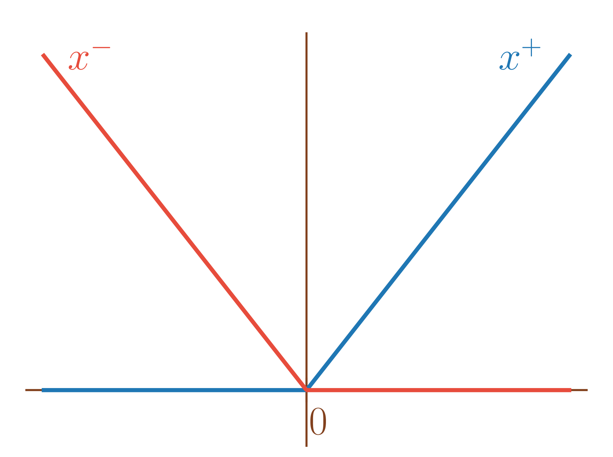
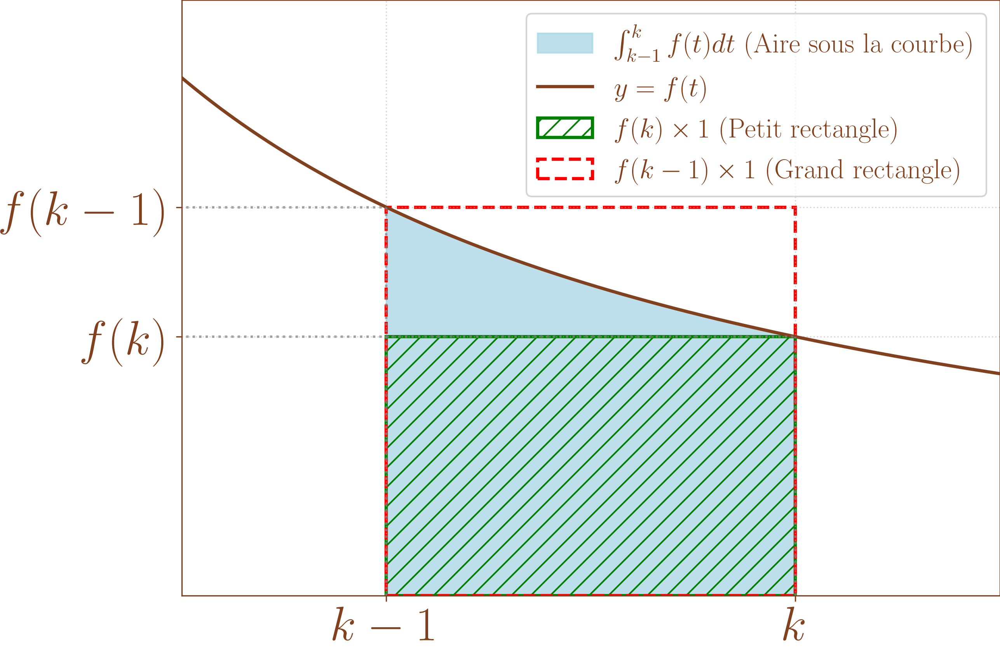
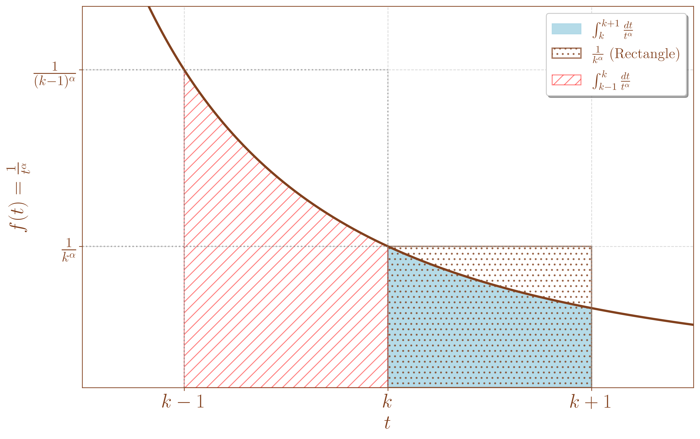
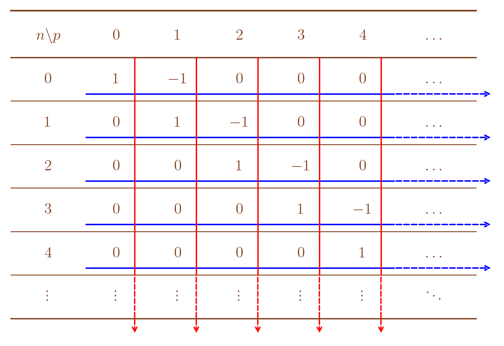
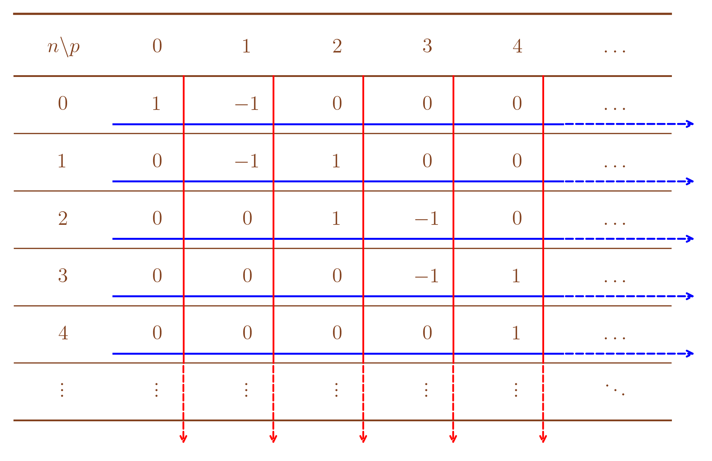
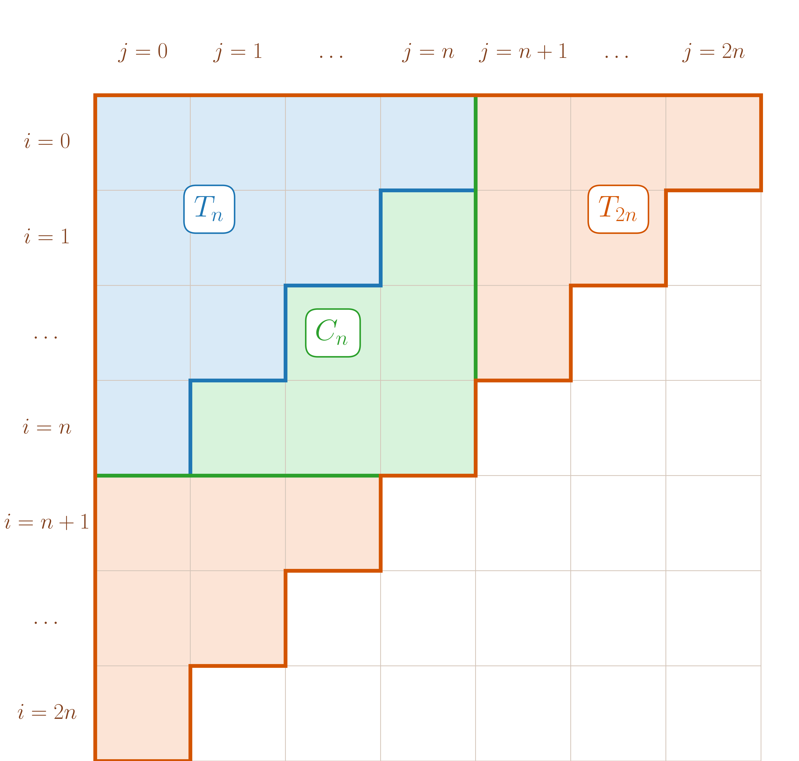

Dans tout le cours, \((E,\left\|\cdot\right\|)\) désigne un \(\mathbb{K}\)-espace vectoriel normé de dimension finie avec \(\mathbb{K}= \mathbb{R}\) ou \(\mathbb{K}= \mathbb{C}\).
Soit \((u_n)_{n\geq 0}\) une suite de \(E\), on considère, pour \(n \in \mathbb{N}\), \(S_n = \sum_{k=0}^n u_k \in E\).
La série de terme général \(u_n\), notée \(\sum u_n\), est la donnée des suites \(\left(u_n\right)\) et \(\left(S_n\right)\).
\((S_n)\) est appelée la suite des sommes partielles associées à \(\sum u_n\).
Si \((S_n)\) converge vers une limite \(S \in E\), on dit que la série \(\sum u_n\) converge (est convergente) et sa limite est appelée la somme de la série \(\sum u_n\) et est notée \(\sum_{n=0}^{+\infty} u_n\) ou \(\sum_{n\geq 0}^{+\infty} u_n\).
Si \((S_n)\) diverge, on dit que \(\sum u_n\) diverge (est divergente).
Le caractère convergent ou divergent d’une série est appelé sa nature.
Comme \(E\) est de dimension finie, la convergence de \(\sum u_n\) ne dépend pas de la norme.
La définition s’adapte avec \((u_n)_{n\geq n_0}\) et \(S_n = \sum_{k= n_0}^n u_k\) pour \(n \geq n_0\) dont on notera la somme \(\sum_{n=n_0}^{+\infty} u_n\) ou \(\sum_{n\geq n_0} u_n\) en cas de convergence. On notera parfois \(\sum_{n \geq n_0} u_n\) au lieu de \(\sum u_n\) pour apporter la précision que \(u_n\) est définie pour \(n \geq n_0\).
Soit \(x \in \mathbb{R}\), on peut considérer la suite \(\sum u_n\) avec \(u_n = \frac{x^n}{n!}\) pour \(n \in \mathbb{N}\). Elle est convergente de somme \(e^x\). En effet, comme \(f: x \in \mathbb{R}\mapsto e^x\) est \(\mathscr{C}^\infty\), par inégalité de Taylor-Lagrange et \(n \in \mathbb{N}\), \[\begin{aligned} \left|f(x) - \sum_{k=0}^n \frac{f^{(k)}(0)}{k!}x^k\right| & = \left|e^x - \sum_{k=0}^n \frac{x^k}{k!}\right| \\ & \leq \sup_{t\in [0,x]}\underbrace{\left|f^{(n+1)}(t)\right|}_{=e^t} \frac{\left|x\right|^{n+1}}{(n+1)!} \\ & \leq \frac{\max(e^x,e^0)\left|x\right|^{n+1}}{(n+1)!} \substack{\text{ car $\exp$ est croissante} \\\text{ (et éventuellement $x < 0$)}}\\ & \leq \frac{\max(e^x,1)\left|x\right|^{n+1}}{(n+1)!} \xrightarrow[n \to +\infty]{} 0. \end{aligned}\]
O, écrit alors \(e^x = \sum_{k=0}^{+\infty} \frac{x^k}{k!}\). De même, \(\cos(x) = \sum_{k=0}^{+\infty} \frac{(-1)^kx^{2k}}{(2k)!}\) et \(\sin(x) = \sum_{k=0}^{+\infty} \frac{(-1)^kx^{2k+1}}{(2k+1)!}\).
Soit \(\sum u_n\) une série convergente de \(E\). Alors, \(u_n \xrightarrow[n \to +\infty]{} 0\).
Notons \(\left(S_n\right)\) la suite des sommes partielles associée à \(\sum u_n\).
On a pour tout \(n \geq 1\), \(S_{n}-S_{n-1} = \sum_{k=0}^{n}u_k - \sum_{k=0}^{n-1}u_k = u_n\).
Donc si \(\left(S_n\right)\) converge vers une limite \(S \in E\), \(\left(u_n\right)\) converge vers \(S-S = 0\).
La réciproque est fausse.
La série harmonique \(\sum_{n \geq 1} \frac{1}{n}\) vérifie \(\frac{1}{n} \xrightarrow[n \to +\infty]{} 0\) mais diverge.
Par concavité de \(x > -1 \mapsto \ln(1+x)\), pour tout \(n \in \mathbb{N}^{\star}\), \(\ln\left(1+\frac{1}{n}\right) \leq \frac{1}{n}\).
Or, pour \(n \in \mathbb{N}^{\star}\), \(\ln\left(1+\frac{1}{n}\right) = \ln\left(\frac{n+1}{n}\right) = \ln(n+1)-\ln(n)\).
Donc pour \(N \in \mathbb{N}^{\star}\), \(\sum_{n=1}^N \ln\left(1+\frac{1}{n}\right) = \sum_{n=1}^N\left(\ln(n+1)-\ln(n)\right) = \ln(N+1)-\ln(1) = \ln(N+1) \leq \sum_{n=1}^N \frac{1}{n}\) et \(\sum_{n=1}^N \frac{1}{n} \xrightarrow[N \to +\infty]{} +\infty\) d’où la série est effectivement divergente.
Soit \(\sum u_n\) une série de \(E\). Si \(u_n \centernot{\xrightarrow[n \to +\infty]{}} 0\), on dit que \(\sum u_n\) diverge grossièrement.
Soit \(q \in \mathbb{C}\), on considère la suite \(\left(u_n\right)\) définie par \(u_n = q^n\) pour tout \(n \geq 0\). La série \(\sum u_n\) est alors appelée série géométrique et \[\sum u_n \text{ converge } \iff \left|q\right| < 1.\] De plus, en cas de convergence, la somme de la série vaut \(\frac{1}{1-q}\).
\(\quad\)
Si \(\left|q\right| \geq 1\), pour \(n \in \mathbb{N}\), \(\left|q^n\right| \geq 1\) donc la série diverge grossièrement (\(q^n \centernot{\xrightarrow[n \to +\infty]{}} 0\)).
Si \(\left|q\right| < 1\), pour \(N \in \mathbb{N}\), \(\sum_{n=0}^Nq^n = \frac{1-q^{n+1}}{1-q}\) et \(q^{n+1} \xrightarrow[n \to +\infty]{} 0\) donc \(\sum_{n=0}^Nq^n \xrightarrow[N \to +\infty]{} \frac{1}{1-q}\).
Soit \(\alpha \in \mathbb{R}\), \[\sum_{n \geq 1} \frac{1}{n^\alpha} \text{ converge } \iff \alpha > 1.\]
Pour \(\alpha \leq 1\), pour tout \(n \in \mathbb{N}^{\star}\), \(\frac{1}{n^\alpha} \geq \frac{1}{n}\).
Donc pour \(N \in \mathbb{N}^{\star}\), \(\sum_{n=1}^N \frac{1}{n^\alpha} \geq \sum_{n=1}^N \frac{1}{n} \xrightarrow[n \to +\infty]{} +\infty\) (voir l’exemple [ex:série_harmonique]) et \(\sum \frac{1}{n^\alpha}\) diverge.
Le cas de convergence pour \(\alpha < 1\) est traité plus tard dans le cours (voir l’exemple [ex:series_Riemann]), à l’aide d’une comparaison série-intégrale.
Soient \(\sum u_n\) une série de \(E\) et \(n_0,n_1 \in \mathbb{N}\) tels que \(n_0 < n_1\).
Alors, \(\sum_{n \geq n_0} u_n\) et \(\sum_{n \geq n_1} u_n\) sont de même nature.
De plus, en cas de convergence, \(\sum_{n = n_0}^{+\infty} u_n= \sum_{n = n_1}^{+\infty} u_n+\sum_{n=n_0}^{n_1-1} u_n\).
Pour \(N \geq n_1\), on note \(S_N = \sum_{n=n_0}^{N} u_n\) et \(T_N = \sum_{n=n_1}^{N} u_n\) les sommes partielles associées.
Alors, pour tout \(N \geq N_1\), \(S_N = T_N+\underbrace{\sum_{n=n_0}^{n_1-1} u_n}_{\text{ne dépend pas de $N$.}}\)
et on a clairement \(\left(S_N\right)\) converge \(\iff\) \(\left(T_N\right)\) converge avec \(\sum_{n = n_0}^{+\infty} u_n= \sum_{n = n_1}^{+\infty} u_n+\sum_{n=n_0}^{n_1-1} u_n\) en cas de convergence..
Soient \(\sum_{n \geq n_0} u_n\) une série convergente de \(E\) et \(n \geq n_0\).
\(R_n = \sum_{k=n+1}^{+\infty} u_k\) est défini et est appelé le reste d’indice \(n\) de la série.
Soient \(\sum_{n \geq n_0} u_n\) une série convergente de \(E\) et \(\left(R_n\right)_{n\geq n_0}\) la suite des restes associés.
Alors, \(R_n \xrightarrow[n \to +\infty]{} 0\).
Notons \(S\) la somme de la série et \(\left(S_n\right)_{n \geq n_0}\) la suite des sommes partielles associée telle que \(S_n \xrightarrow[n \to +\infty]{} S\).
Alors, pour \(n \geq n_0\), \(S_n+R_n = S \iff R_n = S_n-S \xrightarrow[n \to +\infty]{} 0\).
Soient \(\sum_{n \geq n_0} u_n\) et \(\sum_{n \geq n_0} v_n\) deux séries de \(E\).
Si \(\sum_{n \geq n_0} u_n\) et \(\sum_{n \geq n_0} v_n\) sont convergentes, soient \(\lambda, \mu \in \mathbb{K}\) alors \(\sum_{n \geq n_0} \left(\lambda u_n+\mu v_n\right)\) est convergente avec \(\sum_{n = n_0}^{+\infty} \left(\lambda u_n+\mu v_n\right) = \lambda \sum_{n = n_0}^{+\infty} u_n+ \mu \sum_{n = n_0}^{+\infty}v_n\).
Soit \(F\) un espace vectoriel de dimension finie et \(f \in \mathscr{L}(E,F)\). Si \(\sum_{n \geq n_0} u_n\) est convergente alors, \(\sum_{n \geq n_0} f(u_n)\) converge et \(\sum_{n= n_0}^{+\infty} f(u_n) = f\left(\sum_{n= n_0}^{+\infty} u_n\right)\).
Soit \(\mathscr{B}= (e_1,\ldots,e_p)\) une base de \(E\) telle que pour \(n \geq n_0\), \(u_n = u_{n,1} e_1+\ldots+u_{n,p} e_p\). Alors, \[\sum_{n \geq n_0} u_n \text{ converge } \iff \forall 1 \leq j \leq p, \sum_{n \geq n_0} u_{n,j} \text{ converge.}\] De plus, dans ce cas, \(\sum_{n = n_0}^{+\infty} u_n = \left(\sum_{n = n_0}^{+\infty} u_{n,1}\right) e_1+\ldots+\left(\sum_{n = n_0}^{+\infty} u_{n,p}\right) e_p\).
Soit \(N \geq n_0\),
\(\sum_{n = n_0}^{N} \left(\lambda u_n+\mu v_n\right) = \lambda \sum_{n = n_0}^{N} u_n+ \mu \sum_{n = n_0}^{N}v_n \xrightarrow[N \to +\infty]{} \lambda \sum_{n = n_0}^{+\infty} u_n+ \mu \sum_{n = n_0}^{+\infty}v_n\).
Soit \(N \geq n_0\), \(\sum_{n= n_0}^{N} f(u_n) \underbrace{=}_{\substack{\text{par linéarité}\\\text{ de $f$}}} f\left(\sum_{n= n_0}^{N} u_n\right) \xrightarrow[N \to +\infty]{} f\left(\sum_{n= n_0}^{+\infty} u_n\right)\) car \(f\) est linéaire donc continue car \(E\) est de dimension finie.
Soit \(N \geq n_0\), \(\sum_{n = n_0}^{N} u_n = \left(\sum_{n = n_0}^{N} u_{n,1}\right) e_1+\ldots+\left(\sum_{n = n_0}^{N} u_{n,p}\right) e_p\)
Donc \[\left(\sum_{n= n_0}^{N} u_n \right)_{N \geq 0}\text{ converge } \iff \forall 1 \leq j \leq p, \left(\sum_{n= n_0}^{N} u_{n,j}\right)_{N \geq 0} \text{ converge}\] avec, en cas de convergence, \[\sum_{n = n_0}^{+\infty} u_n = \left(\sum_{n = n_0}^{+\infty} u_{n,1}\right) e_1+\ldots+\left(\sum_{n = n_0}^{+\infty} u_{n,p}\right) e_p.\]
Soit \(\sum u_n\) une série de \(\mathbb{C}\) alors \[\sum_{n \geq n_0} u_n \text{ converge } \iff \sum_{n \geq n_0} \mathop{\mathrm{Re}}\left(u_n\right) \text{ et }\sum_{n \geq n_0} \mathop{\mathrm{Im}}\left(u_n\right) \text{ convergent} \iff \sum_{n \geq n_0} \overline{u_n} \text{ converge}.\] Dans ce cas, \(\sum_{n = n_0}^{+\infty} u_n=\sum_{n = n_0}^{+\infty} \mathop{\mathrm{Re}}(u_n)+i\sum_{n = n_0}^{+\infty} \mathop{\mathrm{Im}}(u_n)\)
et \(\sum_{n = n_0}^{+\infty} \overline{u_n} = \sum_{n = n_0}^{+\infty} \mathop{\mathrm{Re}}(u_n)-i\sum_{n = n_0}^{+\infty} \mathop{\mathrm{Im}}(u_n)=\overline{\sum_{n = n_0}^{+\infty} u_n}\)
On peut procéder à des translations d’indice. Par exemple, pour \(a \in \mathbb{C}\) tel que \(\left|a\right| < 1\) et \(n_0 \in \mathbb{N}\), on a \(\sum_{n=n_0}^{+\infty} a^n = a^{n_0}\sum_{n=n_0}^{+\infty} a^{n-n_0} =a^{n_0}\sum_{k=0}^{+\infty} a^{k} = \frac{a^{n_0}}{1-a}\).
Si \(u_n = v_n+w_n\) alors,
Si \(\sum v_n\) et \(\sum w_n\) convergent alors \(\sum u_n\) converge,
Si \(\sum v_n\) converge et \(\sum w_n\) diverge alors \(\sum u_n\) diverge,
Si \(\sum v_n\) diverge et \(\sum w_n\) diverge alors on ne peut rien dire de la nature de \(\sum u_n\).
En particulier, si \(\sum u_n\) converge, \(\sum v_n\) et \(\sum w_n\) sont de même nature.
Soit \(x \in \mathbb{R}\), montrer l’existence de \(\sum_{n=0}^{+\infty} \frac{\sin(nx)}{2^n}\) et calculer cette somme.
\(\sum_{n \geq 0} \left(\frac{e^{ix}}{2}\right)^n\) converge car \(\left|\frac{e^{ix}}{2}\right| = \frac{1}{2} < 1\).
Donc \(\sum_{n \geq 0} \mathop{\mathrm{Im}}\left(\left(\frac{e^{ix}}{2}\right)^n\right) =\sum_{n \geq 0} \mathop{\mathrm{Im}}\left(\frac{e^{inx}}{2^n}\right) = \sum_{n \geq 0}\frac{\sin(nx)}{2^n}\) converge et \[\begin{aligned} \sum_{n=0}^{+\infty}\frac{\sin(nx)}{2^n} & = \mathop{\mathrm{Im}}\left(\sum_{n=0}^{+\infty}\left(\frac{e^{ix}}{2}\right)^n\right) \\ & = \mathop{\mathrm{Im}}\left(\frac{1}{1-\frac{e^{ix}}{2}}\right) \\ & = \mathop{\mathrm{Im}}\left(\frac{2}{2-e^{ix}}\right) \\ & = \mathop{\mathrm{Im}}\left(\frac{2\left(2-e^{-ix}\right)}{\left(2-e^{ix}\right)\left(2-e^{-ix}\right)}\right) \text{ en multipliant par le conjugué}\\ & = \mathop{\mathrm{Im}}\left(\frac{2\left(2-e^{-ix}\right)}{4+1-2(e^{ix}+e^{-ix})}\right) \\ & = \mathop{\mathrm{Im}}\left(\frac{2\left(2-e^{-ix}\right)}{5-4\cos(x)}\right) \\ & = \frac{2\sin(x)}{5-4\cos(x)}. \end{aligned}\]
Soit \(\sum_{n \geq n_0} u_n\) une série à termes réels positifs et \(\left(S_n\right)\) la suite des sommes partielles associé.
Alors, \(\sum u_n \text{ converge } \iff \left(S_n\right) \text{ est majorée}.\)
De plus, dans le cas où \(\sum u_n\) diverge, \(S_n \xrightarrow[n \to +\infty]{} +\infty\).
Pour \(n \geq n_0\), \(S_{n+1}-S_n = u_{n+1} \geq 0\) donc \(\left(S_n\right)\) est croissante et converge si et seulement si elle est majorée.
De plus, en cas de non-convergence, \(\left(S_n\right)\) est non majorée et \(S_n \xrightarrow[n \to +\infty]{} +\infty\).
Soit \(\sum_{n \geq n_0} u_n\) une série à termes réels positifs qui converge alors \[\sum_{n=n_0}^{+\infty}u_n = 0 \iff \forall n \geq n_0, u_n = 0.\]
Soit \(\sum u_n\) et \(\sum v_n\) des séries à termes positifs telles qu’il existe \(N \in \mathbb{N}\) tel que pour tout \(n \geq N\), \(u_n \leq v_n\).
Alors, si \(\sum v_n\) converge, \(\sum u_n\) converge (et de façon équivalente, si \(\sum u_n\) diverge, \(\sum v_n\) diverge).
Pour tout \(n \geq N\), \[\sum_{k=N}^n u_k \leq \sum_{k=N}^n v_k \leq \sum_{k=N}^{+\infty} v_k < +\infty.\]
On en déduit que \(\left(\sum_{k=N}^n u_k\right)_{n \geq 0}\) est majorée et donc \(\sum u_n\) converge.
Soit \((a_n)\) une suite de réels positifs et \((u_n)\) définie par \(u_n = \frac{a_n}{1+n^2a_n}\) pour tout \(n \geq 0\) alors \(\sum u_n\) converge.
En effet, \(u_n = \left\{\begin{array}{ll} 0 \leq \frac{1}{n^2} & \mbox{ si $a_n = 0$} \\ \frac{a_n}{a_n\left(\frac{1}{a_n}+n^2\right)} = \frac{1}{\frac{1}{a_n}+n^2} \leq \frac{1}{n^2}& \mbox{ si $a_n > 0$} \end{array} \right..\)
Ceci est faux pour des séries à termes réels de signe quelconque. Par exemple, pour tout \(n \geq 1\), \(-\frac{1}{n} \leq \frac{1}{n^2}\) mais \(\sum\left(-\frac{1}{n}\right)\) diverge.
Soient \(\sum_{n \geq n_0} u_n\) et \(\sum_{n \geq n_0} v_n\) deux séries réelles qui convergent telles que pour tout \(n \geq n_0\), \(u_n \leq v_n\).
Alors, \(\sum_{n=n_0}^{+\infty} u_n \leq \sum_{n=n_0}^{+\infty} v_n\) avec égalité si et seulement si pour tout \(n \geq n_0\), \(u_n=v_n\).
Pour tout \(n \geq n_0\), \(v_n-u_n \geq 0\). De plus, \(\sum_{n \geq n_0}\left(v_n-u_n\right)\) converge avec \(\sum_{n=n_0}^{+\infty} \left(v_n-u_n\right) = \sum_{n=n_0}^{+\infty} v_n-\sum_{n=n_0}^{+\infty} u_n \geq 0\) et égalité si et seulement si pour tout \(n \geq n_0\), \(u_n=v_n\).
Soit \(\sum_{n \geq n_0} u_n\) une série de \(E\).
On dit que \(\sum_{n \geq n_0} u_n\) converge absolument si la série réelle \(\sum_{n \geq n_0} \left\|u_n\right\|\) converge.
Comme \(E\) est de dimension finie et que toutes les normes y sont équivalentes, la définition ne dépend pas de la norme choisie sur \(E\). En effet, si l’on considère une autre norme \(N\) sur \(E\) alors il existe \(\alpha > 0\) tel que pour tout \(x \in E\), \(N(x) \leq \alpha \left\|x\right\|\) donc pour \(n \in \mathbb{N}\), \(0 \leq N(u_n) \leq \alpha \left\|u_n\right\|\) et si \(\sum \left\|u_n\right\|\) converge, \(\sum N(u_n)\) converge aussi.
Soit \(\sum_{n \geq n_0} u_n\) une série de \(E\). Si \(\sum_{n \geq n_0} u_n\) converge absolument alors \(\sum_{n \geq n_0} u_n\) converge.
De plus, dans ce cas, \(\left\|\sum_{n=n_0}^{+\infty} u_n \right\|\leq \sum_{n=n_0}^{+\infty} \left\|u_n \right\|\).
Commençons par le cas particulier où \(E = \mathbb{R}\).
Soit \(x \in \mathbb{R}\), on pose
\[\begin{aligned} & x^+ = \left\{\begin{array}{ll} x & \mbox{ si $x \geq 0$} \\ 0 & \mbox{ sinon} \end{array}\right. \\ \text{ et }& x^- = \left\{\begin{array}{ll} -x & \mbox{ si $x < 0$} \\ 0 & \mbox{ sinon} \end{array}\right. \end{aligned}\]
qui sont positifs.
De plus, \(x = x^+-x^-\) et \(\left|x\right| = x^++x^-\).

Or, si \(\sum \left|u_k\right|\) converge, comme la série est à termes positifs, il existe \(M \in \mathbb{R}^+\) tel que pour tout \(n \in \mathbb{N}\), \(\sum_{k=0}^n \left|u_k\right| \leq M\). On a donc
\(\sum_{k=n_0}^n u_k^+ \leq \sum_{k=n_0}^n \left(u_k^++u_k^-\right) = \sum_{k=n_0}^n \left|u_k\right| \leq M\) donc \(\sum u_n^+\) converge (car elle est à termes positifs).
\(\sum_{k=n_0}^n u_k^- \leq \sum_{k=n_0}^n \left(u_k^++u_k^-\right) = \sum_{k=n_0}^n \left|u_k\right| \leq M\) donc \(\sum u_n^-\) converge (car elle est à termes positifs).
Comme \(u_n = u_n^+-u_n^-\), \(\sum u_n\) converge (et a pour somme \(\sum_{n\geq n_0} u_n^+ - \sum_{n\geq n_0} u_n^-\).)
Revenons au cas général où \(E\) est un \(\mathbb{K}\)-espace de dimension finie. On peut considérer une base \(\mathscr{B}= (e_1,\ldots,e_p)\) du \(\mathbb{R}\)-espace vectoriel \(E\) telle que pour tout \(n \geq n_0\), \(u_n = u_{n,1} e_1+\ldots+u_{n,p} e_p\).
On considère la norme \(\left\|\cdot\right\|_{\infty,\mathscr{B}}\) sur \(E\) telle que \(\left\|x\right\|_{\infty,\mathscr{B}} = \max_{1 \leq j \leq p} \left|x_j\right|\) pour \(x = \sum_{j=1}^p x_j e_j \in E\).
On a alors, pour tout \(1 \leq j \leq p\), \(0 \leq \left|u_{n,j}\right| \leq \left\|u_n\right\|_{\infty,\mathscr{B}}\).
Donc \(\sum_{n \geq n_0} \left|u_{n,j}\right|\) converge puis \(\sum_{n \geq n_0} {u_{n,j}}\) converge (par le cas \(E = \mathbb{R}\)). Cela donne donc que \(\sum_{n \geq n_0} u_n\) converge.
De plus, soit \(N \in \mathbb{N}\), \(\left\|\sum_{n=n_0}^{N} u_n \right\|\leq \sum_{n=n_0}^{N} \left\|u_n \right\|\) donc en passant à la limite quand \(N \longrightarrow +\infty\), \(\left\|\sum_{n=n_0}^{+\infty} u_n \right\|\leq \sum_{n=n_0}^{+\infty} \left\|u_n \right\|\)
La réciproque est fausse. On montrera plus tard que \(\sum_{n \geq 1} \frac{(-1)^n}{n}\) est convergente (voir la proposition [prop:series_RIemann_alternees]) mais pas absolument convergente (on a déjà vu que \(\sum \frac{1}{n}\) diverge).
Si \(\sum u_n\) et \(\sum v_n\) convergent absolument alors pour \(\lambda,\mu \in \mathbb{K}\), \(\sum\left(\lambda u_n+\mu v_n\right)\) converge absolument car pour \(n \in \mathbb{N}\), \(0 \leq \left\|\lambda u_n+\mu v_n\right\| \leq \left|\lambda\right|\left\|u_n\right\|+\left|\mu\right|\left\|v_n\right\|\).
Si \(\left\|u_n\right\| \leq v_n\) à partir d’un certain rang et \(\sum v_n\) converge alors \(\sum u_n\) converge absolument.
\(\sum \frac{\cos(n!)}{n\sqrt{n}}\) converge absolument donc converge car pour tout \(n \in \mathbb{N}^{\star}\), \(\left|\frac{\cos(n!)}{n\sqrt{n}}\right| \leq \frac{1}{n^{\tfrac{3}{2}}}\).
Soit \(\sum_{n \geq n_0} u_n\) une série de \(E\). Si \(\sum_{n \geq n_0} u_n\) est convergente mais pas absolument convergente, on dit que la série est semi-convergente.
Soit \(\sum_{n \geq n_0} u_n\) une suite réelle.
On dit que \(\sum_{n \geq n_0} u_n\) est alternée si \(\left((-1)^n u_n\right)\) est de signe constant à partir d’un certain rang.
\(\sum_{n \geq 1} \frac{(-1)^n}{n}\) et \(\sum_{n \geq 1} \frac{(-1)^{n+1}}{\sqrt{n}}\) sont alternées.
Si \((-1)^n u_n \underset{n\to +\infty}{\sim} v_n\) et que \(\left(v_n\right)\) est de signe constant à partir d’un certain rang alors \((-1)^n u_n\) est de signe constant à partir d’un certain rang.
Montrer que \(\sum_{n \geq 1} \frac{\sin\left(\pi\sqrt{n^2+n}\right)}{\sqrt{n}}\) est alternée.
Pour \(n \in \mathbb{N}^{\star}\), \[\pi\sqrt{n^2+n} = \pi n\left(1+\frac{1}{n}\right)^{\tfrac{1}{2}} = \pi n\left(1+\frac{1}{2n}+\underset{n\to +\infty}{o}\left(\frac{1}{n}\right)\right) = n\pi+\frac{\pi}{2}+\underset{n\to +\infty}{o}(1).\]
Or, pour \(t \in \mathbb{R}\), \(\sin(n\pi+t) = (-1)^n \sin(t)\) donc \[\frac{\sin\left(\pi\sqrt{n^2+n}\right)}{\sqrt{n}} = \frac{1}{\sqrt{n}}\sin\left(n\pi+\frac{\pi}{2}+\underset{n\to +\infty}{o}(1)\right) = \frac{(-1)^n}{\sqrt{n}}\sin\left(\frac{\pi}{2}+\underset{n\to +\infty}{o}(1)\right) \underset{n\to +\infty}{\sim} \frac{(-1)^n}{\sqrt{n}}.\]
Donc \((-1)^n\frac{\sin\left(\pi\sqrt{n^2+n}\right)}{\sqrt{n}} \underset{n\to +\infty}{\sim} \frac{1}{\sqrt{n}}\) qui est de signe constant et la série est alternée.
Soient \(a,b \in \mathbb{R}\) tels que \(\left|a\right| \geq \left|b\right|\) alors \(a+b\) est du signe de \(a\).
On a \(\left|a\right| \geq \left|b\right| \iff -\left|a\right| \leq b \leq \left|a\right|\).
Si \(a \geq 0\), \(\left|a\right| = a\) et \(b \geq -a\) donc \(a+b \geq a-a = 0\).
Si \(a \leq 0\), \(\left|a\right| = -a\) et \(b \leq -a\) donc \(a+b \leq a-a = 0\).
(Théorème spécial des séries alternées) Soit \(\sum_{n \geq n_0} u_n\) une suite réelle. Si
\(\sum_{n \geq n_0} u_n\) est alternée,
\(\left(u_n\right)_{n \geq n_0}\) décroît à partir d’un certain rang,
\(u_n \xrightarrow[n \to +\infty]{} 0\),
Alors \(\sum u_n\) est convergente.
Soit \(n_1 \in \mathbb{N}\) tel que pour \(n \geq n_1\), \(\left((-1)^n u_n\right)_{n \geq n_1}\) est de signe constant (disons \(\geq 0\) par exemple, mais la preuve est adaptable à \(\leq 0\)) et \(\left(\left|u_n\right|\right)_{n \geq n_1}\) est décroissante. Montrons que la suite des sommes partielles \(\left(T_n\right)_{n \geq n_1}\) (ie \(T_n = \sum_{k=n_1}^n u_k\) pour \(n \geq n_1\)) est convergente. Pour cela, on va montrer que \(\left(T_{2n}\right)_{n \geq n_1}\) et \(\left(T_{2n+1}\right)_{n \geq n_1}\) sont adjacentes. Ainsi, ces deux sous-suites seront convergentes de même limites et \(\left(T_n\right)\) sera effectivement convergente.
Pour \(n \geq n_1\), \(T_{2(n+1)}-T_{2n} = \sum_{k=n_1}^{2n+2} u_k - \sum_{k=n_1}^{2n} u_k = u_{2n+2}+u_{2n+1}\).
Or, \(\left|u_{2n+2}\right| \leq \left|u_{2n+1}\right|\) et \((-1)^{2n+1}u_{2n+1} = -u_{2n+1}\geq 0 \Longrightarrow u_{2n+1} \leq 0\) donc par le lemme [lem:sommer_Deux_reels_dont_on_connait_relation_module], \(T_{2(n+1)}-T_{2n} \leq 0\) et \(\left(T_{2n}\right)_{n \geq n_1}\) est décroissante.
Pour \(n \geq n_1\), \(T_{2(n+1)+1}-T_{2n+1} = \sum_{k=n_1}^{2n+3} u_k - \sum_{k=n_1}^{2n+1} u_k = u_{2n+3}+u_{2n+2}\).
Or, \(\left|u_{2n+3}\right| \leq \left|u_{2n+2}\right|\) et \((-1)^{2n+2}u_{2n+2} = u_{2n+2}\geq 0\) donc par le lemme [lem:sommer_Deux_reels_dont_on_connait_relation_module], \(T_{2(n+1)+1}-T_{2n+1} \geq 0\) et \(\left(T_{2n+1}\right)_{n \geq n_1}\) est croissante.
Pour \(n \in \mathbb{N}\), \(T_{2n+1}-T_{2n} = \sum_{k=n_1}^{2n+1} u_k - \sum_{k=n_1}^{2n} u_k = u_{2n+1} \xrightarrow[n \to +\infty]{} 0\).
Donc \(\left(T_{2n}\right)_{n \geq n_1}\) et \(\left(T_{2n+1}\right)_{n \geq n_1}\) sont effectivement adjacentes puis \(\left(T_n\right)\) converge d’où \(\sum_{n \geq n_1} u_n\) et \(\sum_{n \geq n_0}\) convergent.
(Séries de Riemann alternées) Soit \(\alpha \in \mathbb{R}\),
\[\sum_{n \geq 1} \frac{(-1)^n}{n^\alpha} \text{ converge } \iff \alpha > 0.\] (donc la série est semi-convergente pour \(0 \leq \alpha < 1\)).
Si \(\alpha \leq 0\), \(\left|\frac{(-1)^n}{n^\alpha}\right| = \frac{1}{n^\alpha} \centernot{\xrightarrow[n \to +\infty]{}} 0\) donc la série diverge grossièrement.
Si \(\alpha > 0\),
Pour \(n \in \mathbb{N}^{\star}\), \((-1)^n \frac{(-1)^n}{n^\alpha} = \frac{1}{n^\alpha} = 1\) donc la série est alternée,
\(\left(\left|\frac{(-1)^n}{n^\alpha}\right|\right)_{n \geq 1} = \left(\frac{1}{n^\alpha}\right)\) décroît,
\(\left|\frac{(-1)^n}{n^\alpha}\right| \xrightarrow[n \to +\infty]{} 0\).
Donc par le théorème spécial des séries alternées, \(\sum_{n \geq 1} \frac{(-1)^n}{n^\alpha}\) converge.
Comment utiliser des équivalents pour utiliser le théorème spécial des séries alternées ?
Si \((-1)^n u_n \underset{n\to +\infty}{\sim} v_n\) et que \(\left(v_n\right)\) est de signe constant à partir d’un certain rang alors \((-1)^n u_n\) est de signe constant à partir d’un certain rang (pour le point 1.).
Si \(u_n \underset{n\to +\infty}{\sim} v_n\), \(u_n \xrightarrow[n \to +\infty]{} 0 \iff v_n \xrightarrow[n \to +\infty]{} 0\) (pour le point 3.).
En revanche, si \(\left|u_n\right| \underset{n\to +\infty}{\sim} \left|v_n\right|\), \(\left|u_n\right| \text{ décroissante } \centernot{\iff} \left|v_n\right| \text{ décroissante }\).
Par exemple, avec \(\left(u_n\right)\) et \(\left(v_n\right)\) telles que \(u_n = 1-\frac{1}{n+1}\) et \(v_n = 1+\frac{1}{n+1}\) pour \(n \in \mathbb{N}\), on a \(u_n \underset{n\to +\infty}{\sim} 1\) et \(v_n \underset{n\to +\infty}{\sim} 1\) donc \(u_n \underset{n\to +\infty}{\sim} u_n\) mais \(\left(u_n\right)\) est croissante tandis que \(\left(v_n\right)\) est décroissante.
Comment faire alors ?
On peut montrer que \(\left|u_n\right|-\left|u_{n+1}\right| \geq 0\) à partir d’un certain rang, éventuellement via un équivalent,
Si \(\left|u_n\right|\) est non nul à partir d’un certain rang, on peut montrer que \(\frac{\left|u_n\right|}{\left|u_{n+1}\right|} > 1\) à partir d’un certain rang, éventuellement via un équivalent,
Si à partir d’un certain rang \(\left|u_n\right| = f(n)\) avec \(f\) une fonction réelle, on peut montrer que \(f\) est décroissante au voisinage de \(+\infty\) (éventuellement via un équivalent de \(f'\) quand \(x \longrightarrow +\infty\), si \(f\) est dérivable), comme illustré dans l’exercice [exoc:series_alternees_De_bertrand].
(Séries de Bertrand alternées) Montrer que \[\sum_{n \geq 2} \frac{(-1)^n}{n^\alpha \left(\ln(n)\right)^\beta} \text{ converge } \iff \left\{\begin{array}{ll} & \alpha > 0 \\ \text{ ou }& \alpha = 0 \text{ et }\beta > 0. \end{array}\right.\]
Posons \(u_n = \frac{(-1)^n}{n^\alpha \left(\ln(n)\right)^\beta} \text{ pour }n \geq 1\).
Si \(\alpha < 0\), par croissances comparées, \(\left|u_n\right| = \frac{n^{\underbrace{-\alpha}_{>0}}}{\left(\ln n\right)^\beta} \xrightarrow[n \to +\infty]{} +\infty\) donc la série diverge grossièrement.
Si \(\alpha = 0\) et \(\beta \geq 0\), \(\left|u_n\right| = \left(\ln(n)\right)^{\underbrace{-\beta}_{\geq 0}} \xrightarrow[n \to +\infty]{}\left\{\begin{array}{ll} + \infty & \mbox{ si $\beta > 0$} \\ 1 & \mbox{ si $\beta = 0$} \\ \end{array}\right.\) donc la série diverge grossièrement.
Si \(\alpha > 0\) ou \(\alpha =0\) et \(\beta > 0\), montrons que le théorème spécial des séries alternées est applicable.
Pour \(n \geq 2\), \((-1)^nu_n = \frac{1}{n^\alpha \left(\ln(n)\right)^\beta} \geq 2\).
Remarquons que pour \(n \geq 2\), \(\left|u_n\right| = f(n)\) avec \(f : x >1 \mapsto \frac{1}{x^\alpha \left(\ln(x)\right)^\beta}\). Montrons la décroissance de \(f\) au voisinage de \(+\infty\), qui induit celle de \(\left(\left|u_n\right|\right)\) à partir d’un certain rang.
\(f\) est dérivable sur \(]1,+\infty[\) avec pour tout \(x > 0\),
\(f'(x) = -\frac{\alpha x^{\alpha-1}\left(\ln(x)\right)^\beta+\beta x^{\alpha}\frac{1}{x}\left(\ln(x)\right)^{\beta-1}}{\left(x^\alpha \left(\ln(x)\right)^\beta\right)^2} = -\frac{x^{\alpha-1}\left(\ln(x)\right)^{\beta-1}}{\left(x^\alpha \left(\ln(x)\right)^\beta\right)^2}\left(\alpha\ln(x)+\beta\right)\).
Or, pour \(x > 1\), \(\frac{x^{\alpha-1}\left(\ln(x)\right)^{\beta-1}}{\left(x^\alpha \left(\ln(x)\right)^\beta\right)^2} > 0\) et \(\left\{\begin{array}{ll} \alpha\ln(x)+\beta \xrightarrow[n \to +\infty]{} +\infty & \mbox{ si $\alpha > 0$}, \\ \alpha\ln(x)+\beta = \beta >0 & \mbox{ si $\alpha =0 \text{ et }\beta > 0$} \end{array}\right..\)
Donc \(f'(x) > 0\) pour \(x\) au voisinage de \(+\infty\) donc \(f\) est décroissante au voisinage de \(+\infty\).
Pour \(n \geq 2\), \(\left|u_n\right| = \frac{1}{n^\alpha \left(\ln(n)\right)^\beta} \xrightarrow[n \to +\infty]{} 0\) par croissances comparées.
On en déduit donc par le théorème spécial des séries alternées que \(\sum u_n\) converge.
Soit \(\sum_{n \geq n_0} u_n\) une suite réelle. Si
\(\left((-1)^nu_n\right)\) est de signe constant dès \(n = n_0\),
\(\left(u_n\right)_{n \geq n_0}\) décroît dès le rang \(n= n_0\),
\(u_n \xrightarrow[n \to +\infty]{} 0\),
Alors la somme \(S = \sum_{n = 0}^{+\infty}\) vérifie :
\(S\) est du signe de \(u_{n_0}\),
\(\left|S\right| \leq \left|u_{n_0}\right|\)
On suppose \(n_0 = 0\) et \((-1)^n u_n \geq 0\) pour \(n \geq 0\) (la preuve s’adapte immédiatement pour \(n_0 > 0\) et \((-1)^n u_n \leq 0\)).
Pour \(k \in \mathbb{N}\), \(u_{2k}+u_{2k+1} \geq 0\) car \(u_{2k} \geq 0\), \(\left|u_{2k}\right| \geq \left|u_{2k+1}\right|\) et en utilisant le lemme [lem:sommer_Deux_reels_dont_on_connait_relation_module].
Donc, soit \(N \in \mathbb{N}\), \(T_N = \sum_{k=0}^N \underbrace{\left(u_{2k}+u_{2k+1}\right)}_{\geq 0} \geq 0\).
Or, \(T_N = \sum_{k=0}^{2N+1} u_k \xrightarrow[N \to +\infty]{} S\) donc \(S \geq 0\).
De même, \(\ell \in \mathbb{N}^{\star}\), \(u_{2\ell-1}+u_{2\ell} \leq 0\) car \(u_{2\ell-1} \leq 0\), \(\left|u_{2\ell-1}\right| \geq \left|u_{2\ell}\right|\) et en utilisant le lemme [lem:sommer_Deux_reels_dont_on_connait_relation_module].
Donc, soit \(N \in \mathbb{N}\), \(T'_N = \sum_{\ell=1}^N \underbrace{\left(u_{2\ell-1}+u_{2\ell}\right)}_{\leq 0} \leq 0\).
Or, \(T'_N = \sum_{\ell=1}^{2N} u_\ell = \sum_{\ell=0}^{2N} u_\ell-u_0 \xrightarrow[N \to +\infty]{} S-u_0\) donc \(S-u_0 \leq 0 \iff S \leq u_0\).
\(S = \sum_{n = 1}^{+\infty} \frac{(-1)^{n+1}}{n+1}\) est positive et vérifie \(S \leq 1\).
On peut aller plus loin car \(S = 1-\frac{1}{\sqrt{2}}+\sum_{n = 3}^{+\infty} \frac{(-1)^{n+1}}{n+1}\) et en appliquant la propriété à \(T = \sum_{n = 3}^{+\infty} \frac{(-1)^{n+1}}{n+1}\), on a \(T \geq 0\) donc \(S \geq 1-\frac{1}{\sqrt{2}}\).
On n’a pas « \(\sum\left(u_{2n}+u_{2n+1}\right)\) converge \(\Longrightarrow \sum{u_n}\) converge » comme l’illustre \(\left(u_n\right)\) définie par \(u_n = (-1)^n\) pour \(n \in \mathbb{N}\). En revanche, comme utilisé dans la preuve de la proposition [prop:signe_somme_thm_series_alternees], on a bien « \(\sum\left(u_{2n}+u_{2n+1}\right)\) converge \(\Longleftarrow \sum{u_n}\) converge » car pour \(N \in \mathbb{N}\), \(\sum_{n=0}^N\left(u_{2n}+u_{2n+1}\right) = \sum_{n=0}^{2N+1}u_n\).
On pose \(u_n = \frac{(-1)^n 8^n}{(2n)!}\).
Convergence de \(\sum u_n\) ?
Montrer que \(S = \sum_{n=0}^{+\infty}u_n\) est un réel négatif.
Appliquons le théorème spécial des séries alternées.
Pour tout \(n \geq 0\), \((-1)^nu_n = \frac{8^n}{(2n)!} \geq 0\).
Pour \(n \geq 0\),
\(\frac{\left|u_{n+1}\right|}{\left|u_{n}\right|} = \frac{8^{n+1}}{\left(2(n+1)\right)!}\frac{\left(2n\right)!}{8^n} = \frac{8}{(2n+1)(2n+2)} \underset{n\to +\infty}{\sim} \frac{8}{4}= \frac{1}{2} < 1 .\) donc la suite \(\left(\left|u_{n}\right|\right)\) est décroissante à partir d’un certain rang.
\(\frac{8^n}{(2n)!} \xrightarrow[n \to +\infty]{} 0\) (la factorielle l’emporte sur la géometrique).
En appliquant bêtement la proposition [prop:signe_somme_thm_series_alternees], on pourrait croire que \(S \geq 0\) car \(u_0 = \frac{1}{2} \geq 0\). Mais les hypothèses de la proposition sont plus fortes que celles du théorème spécial des séries alternées (signe de \((-1)^nu_n\) constant et \(\left(\left|u_n\right|\right)\) décroissante dès \(n=0\)).
Remarquons qu’on a bien \((-1)^nu_n \geq 0\) dès \(n = 0\).
En revanche, \(\frac{\left|u_{n+1}\right|}{\left|u_{n}\right|} = \frac{8}{(2n+1)(2n+2)}\) donc
Pour \(n=0\), \(\frac{\left|u_{1}\right|}{\left|u_{0}\right|} = \frac{8}{2} = 4 > 1\),
Pour \(n=1\), \(\frac{\left|u_{2}\right|}{\left|u_{1}\right|} = \frac{8}{12} = \frac{2}{3} < 1\),
donc la suite décroît dès \(n=1\). On peut donc appliquer la proposition [prop:signe_somme_thm_series_alternees] à \(\left(u_n\right)_{n \geq 1}\) pour affirmer que \(T = \sum_{n \geq 1} u_n\) vérifie \(T \leq 0\) avec \(-T = \left|T\right| \leq \left|u_1\right| = 4 \iff T \geq -4\).
Donc finalement, \(S = u_0 +T = 1+T \geq -3\), ce qui ne nous arrange pas, on veut plutôt une majoration de \(S\).
On applique alors la proposition [prop:signe_somme_thm_series_alternees] à \(\left(u_n\right)_{n \geq 2}\) pour affirmer que \(T' = \sum_{n \geq 2} u_n\) vérifie \(T' \geq 0\) avec \(T' = \left|T'\right| \leq \left|u_2\right| = \frac{8}{3}\).
Donc finalement, \(S = u_0 +u_1+T'= 1-4+T' \leq -3+\frac{8}{3} = -\frac{1}{3}\), ouf !
Soient \((F,N)\) un autre espace vectoriel normé de dimension finie, \(\sum u_n\) une série de \(E\) et \(\sum v_n\) une série de \(F\).
Si \(u_n =\underset{n\to +\infty}{O} \left(v_n\right)\) et \(\sum v_n\) converge absolument alors \(\sum u_n\) converge absolument,
Si \(u_n =\underset{n\to +\infty}{o} \left(v_n\right)\) et \(\sum v_n\) converge absolument alors \(\sum u_n\) converge absolument,
Si \(F=E\) et \(u_n \underset{n\to +\infty}{\sim} v_n\) alors \(\sum v_n\) converge absolument si et seulement si \(\sum u_n\) converge absolument.
Il existe \(M \in \mathbb{R}^{+}\) et \(N \in \mathbb{N}\) tels que pour tout \(n \geq N\), \(\left\|u_n\right\| \leq M N(v_n)\).
Donc par la proposition [prop:premiere_comp_series], si \(\sum v_n\) converge absolument alors \(\sum u_n\) converge absolument.
Si \(u_n =\underset{n\to +\infty}{o} \left(v_n\right)\) alors \(u_n =\underset{n\to +\infty}{O} \left(v_n\right)\) donc par le point précédent, si \(\sum v_n\) converge absolument alors \(\sum u_n\) converge absolument.
Si \(u_n \underset{n\to +\infty}{\sim} v_n\) alors \(u_n =\underset{n\to +\infty}{O} \left(v_n\right)\) et \(v_n =\underset{n\to +\infty}{O} \left(u_n\right)\) donc par le premier point, \(\sum v_n\) converge absolument si et seulement si \(\sum u_n\) converge absolument.
\(u_n = e^{-n}n^{1000}\sin(n!) = \underset{n\to +\infty}{o} \left(\frac{1}{n^2}\right)\) car \(\sin(n!) = \underset{n\to +\infty}{O}\left(1\right)\) et \(\frac{e^{-n}n^{1000}}{\frac{1}{n^2}} = e^{-n}n^{1002} \xrightarrow[n \to +\infty]{} 0\) (la géométrique avec \(1/e< 1\) l’emporte contre la polynomiale).
Donc \(\sum u_n\) converge absolument (donc converge).
Soit \(z \in \mathbb{C}\), \(\frac{z^n}{n!} = \underset{n\to +\infty}{o}\left(\frac{1}{n^2}\right)\) (la factorielle l’emporte contre la géometrique et la polynomiale) donc \(\sum \frac{z^n}{n!}\) converge absolument (donc converge).
La proposition [prop:comparaison_Asymptote_nature_series] est faux en remplaçant la convergence absolue par de la convergence.
On a \(\frac{1}{n} = \underset{n\to +\infty}{O} \left(\frac{(-1)^n}{\sqrt{n}}\right)\) mais \(\sum \frac{(-1)^n}{\sqrt{n}}\) converge tandis que \(\sum \frac{1}{n}\) diverge.
Soient \(\sum u_n\) et \(\sum v_n\) deux séries de réels.
Si \(u_n \underset{n\to +\infty}{\sim} v_n\) et \(\left(v_n\right)\) est de signe constant à partir d’un certain rang alors \[\sum u_n \text{ converge } \iff \sum v_n \text{ converge}.\]
Comme \(u_n \underset{n\to +\infty}{\sim} v_n\) alors \(\left(u_n\right)\) est aussi de signe constant à partir d’un certain rang.
Donc à partir d’un certain rang, \(u_n = \pm \left|u_n\right|\) et \(v_n = \pm \left|v_n\right|\).
On en déduit \[\begin{aligned} \sum u_n \text{ converge } & \iff \sum u_n \text{ converge absolument} \\ & \iff \sum v_n \text{ converge absolument} \text{ par la proposition 2.1} \\ & \iff \sum v_n \text{ converge.} \end{aligned}\]
Le corollaire [cor:equivalents_equivalence_de_CV_signe_constant] est faux sans l’hypothèse de signe.
On a \(\frac{1}{n} + \frac{(-1)^n}{\sqrt{n}} \underset{n\to +\infty}{\sim} \frac{(-1)^n}{\sqrt{n}}\) mais \(\sum \frac{(-1)^n}{\sqrt{n}}\) converge tandis que \(\sum \left(\frac{1}{n} + \frac{(-1)^n}{\sqrt{n}}\right)\) diverge.
Pour \(\alpha \neq 0\), on pose \(u_n = \frac{(-1)^n}{(-1)^n+n^\alpha}\) pour \(n \in \mathbb{N}^{\star}\).
Etudier la convergence de \(\sum u_n\) en fonction de \(\alpha\).
Si \(\alpha < 0\),
on rappelle que \(\frac{1}{(-1)^n} = (-1)^n\) et donc \(u_n = \frac{(-1)^n}{(-1)^n}\frac{1}{1+\underbrace{(-1)^n n^\alpha}_{\substack{\xrightarrow[n \to +\infty]{} 0 \\ \text{car $\alpha < 0$}}}} \underset{n\to +\infty}{\sim} 1\) puis \(\sum u_n\) diverge grossièrement.
Si \(\alpha > 0\),
\(u_n = \frac{(-1)^n}{(-1)^n+n^\alpha} = \frac{(-1)^n}{n^\alpha}\frac{1}{1+\underbrace{\frac{(-1)^n}{n^\alpha}_{\substack{\xrightarrow[n \to +\infty]{} 0 \\ \text{car $\alpha > 0$}}}}} \underset{n\to +\infty}{\sim} \frac{(-1)^n}{n^\alpha}\).
Problème ! \(\frac{(-1)^n}{n^\alpha}\) ne converge pas absolument pour tout \(\alpha > 0\). Tout ce que l’on peut affirmer ici c’est que pour \(\alpha > 1\), la série \(\sum u_n\) converge absolument donc converge et pour \(0 < \alpha \leq 1\), la série \(\sum u_n\) ne converge pas absolument mais après tout, elle peut-être semi-convergente. Il faut pousser l’analyse en faisant un développement asymptotique plus poussé.
En utilisant \(\frac{1}{1+t}=1-t+\underset{t\to 0}{o}\left(t\right)\), on a \[u_n = \frac{(-1)^n}{n^\alpha}\frac{1}{1+\frac{(-1)^n}{n^\alpha}} = \frac{(-1)^n}{n^\alpha}\left(1-\frac{(-1)^n}{n^\alpha}+\underset{n\to +\infty}{o}\left(\frac{(-1)^n}{n^\alpha}\right)\right) = \frac{(-1)^n}{n^\alpha}-\underbrace{\frac{1}{n^{2\alpha}}+\underset{n\to +\infty}{o}\left(\frac{1}{n^{2\alpha}}\right)}_{= w_n}.\]
Or, \(\sum \frac{(-1)^n}{n^\alpha}\) converge comme série de Riemann alternée car \(\alpha > 0\) et \(w_n \underset{n\to +\infty}{\sim} \frac{1}{n^{2\alpha}} > 0\) donc \(\sum w_n\) converge si et seulement si \(2\alpha > 1 \iff \alpha > \tfrac{1}{2}\) comme série de Riemann.
Donc (voir le deuxième point de la remarque [rem:somme_deux_series_CV_DV]), \(\sum u_n\) converge si et seulement si \(\alpha > \frac{1}{2}\).
On pose \(u_n = \cos\left(\pi\sqrt{n^2+n}\right)\) pour \(n \in \mathbb{N}\).
Déterminer la nature de \(\sum u_n\).
\(\quad\)
Pour \(n \in \mathbb{N}^{\star}\), \(\pi\sqrt{n^2+n} = \pi n \sqrt{1+\frac{1}{n}}\) donc en utilisant \(\sqrt{1+t} = \left(1+t\right)^{\frac{1}{2}} = 1+\frac{1}{2}t-\frac{1}{8}t^2+\underset{t\to 0}{o}\left(t^2\right)\), on a \[\pi\sqrt{n^2+n} = n\pi\left(1+\frac{1}{2n}-\frac{1}{8n^2}+\underset{n\to +\infty}{o}\left(\frac{1}{n^2}\right)\right) = n\pi + \frac{\pi}{2}-\frac{\pi}{8n}+\underset{n\to +\infty}{o}\left(\frac{1}{n}\right).\]
On en déduit
\(u_n = \cos\left( n\pi + \frac{\pi}{2}-\frac{\pi}{8n}+\underset{n\to +\infty}{o}\left(\tfrac{1}{n}\right)\right) = (-1)^n\cos\left(\frac{\pi}{2}-\frac{\pi}{8n}+\underset{n\to +\infty}{o}\left(\tfrac{1}{n}\right)\right) = (-1)^n\sin\left(-\frac{\pi}{8n}+\underset{n\to +\infty}{o}\left(\tfrac{1}{n}\right)\right).\)
Or, \(\sin t = t+\underset{t\to 0}{o}\left(t^2\right)\) donc \[u_n =\frac{\pi}{8}\frac{(-1)^n}{n}+\underset{n\to +\infty}{o}\left(\tfrac{1}{n}\right)+\underset{n\to +\infty}{o}\left(\tfrac{1}{n^2}\right)\] On sait que \(\sum \frac{\pi}{8}\frac{(-1)^n}{n}\) et \(\sum \underset{n\to +\infty}{o}\left(\tfrac{1}{n^2}\right)\) mais on ne peut rien dire de \(\sum \underset{n\to +\infty}{o}\left(\tfrac{1}{n}\right)\). Donc on ne peut rien dire de \(\sum u_n\) (voir le deuxième point de la remarque [rem:somme_deux_series_CV_DV]). Il faut pousser le développement de \(u_n\)...
En utilisant \(\sqrt{1+t} = \left(1+t\right)^{\frac{1}{2}} = 1+\frac{1}{2}t-\frac{1}{8}t^2+\underset{t\to 0}{O}\left(t^3\right)\), on a \[\pi\sqrt{n^2+n} = n\pi\left(1+\frac{1}{2n}-\frac{1}{8n^2}+\underset{n\to +\infty}{O}\left(\frac{1}{n^3}\right)\right) = n\pi + \frac{\pi}{2}-\frac{\pi}{8n}+\underset{n\to +\infty}{O}\left(\frac{1}{n^2}\right).\]
En réutilisant \(\sin t = t+\underset{t\to 0}{o}\left(t^2\right)\), on en déduit
\[u_n = \frac{\pi}{8}\frac{(-1)^n}{n}+\underset{n\to +\infty}{O}\left(\frac{1}{n^2}\right)+\underset{n\to +\infty}{o}\left(\tfrac{1}{n^2}\right) = \frac{(-1)^n\pi}{8n}+\underset{n\to +\infty}{O}\left(\frac{1}{n^2}\right).\]
Or, \(\sum \frac{\pi}{8}\frac{(-1)^n}{n}\) et \(\sum \underset{n\to +\infty}{O}\left(\tfrac{1}{n^2}\right)\) convergent donc \(\sum u_n\) converge.
Soient \((F,N)\) un autre espace vectoriel normé de dimension finie, \(\sum u_n\) une série de \(E\) et \(\sum v_n\) une série de \(F\).
On suppose qu’à partir d’un certain rang, \(\left(u_n\right)\) et \(\left(v_n\right)\) sont non nulles et que \[\frac{\left\|u_{n+1}\right\|}{\left\|u_n\right\|} \leq \frac{N\left(v_{n+1}\right)}{N\left(v_n\right)}.\]
alors, \(u_n = \underset{n\to +\infty}{O}\left(v_n\right)\).
Soit \(N \in \mathbb{N}\) tel que pour tout \(n \geq N\), \(u_n \neq 0, v_n \neq 0\) et \(\frac{\left\|u_{n+1}\right\|}{\left\|u_n\right\|} \leq \frac{N\left(v_{n+1}\right)}{N\left(v_n\right)}.\)
Alors, pout tout \(n \geq N\), \(\frac{\left\|u_{n+1}\right\|}{N\left(v_{n+1}\right)} \leq \frac{\left\|u_n\right\|}{N\left(v_{n}\right)}.\)
On en déduit alors que \(\left(\frac{\left\|u_n\right\|}{N\left(v_{n}\right)}\right)_{n \geq N}\) est décroissante.
En notant \(M = \frac{\left\|u_N\right\|}{N\left(v_{N}\right)}\), on a alors pour tout \(n \geq N\), \[\frac{\left\|u_n\right\|}{N\left(v_{n}\right)} \leq \frac{\left\|u_N\right\|}{N\left(v_{N}\right)}=M \iff \left\|u_n\right\| \leq M.N\left(v_{n}\right)\] donc \(u_n = \underset{n\to +\infty}{O}\left(v_n\right)\).
(Règle de d’Alembert) Soit \(\sum u_n\) une série de \(E\) telle que \(\left(u_n\right)\) est non nulle à partir d’un certain rang. On suppose \(\frac{\left\|u_{n+1}\right\|}{\left\|u_n\right\|} \xrightarrow[n \to +\infty]{} \ell \in [0,+\infty]\) (avec donc \(\ell = +\infty\) éventuellement). Alors,
si \(\ell < 1\), \(\sum u_n\) converge absolument,
si \(\ell > 1\), \(\sum u_n\) diverge grossièrement avec \(\left\|u_n\right\| \xrightarrow[n \to +\infty]{} +\infty.\)
Soit \(k \in ]\ell,1[\), comme \(\frac{\left\|u_{n+1}\right\|}{\left\|u_n\right\|} \xrightarrow[n \to +\infty]{} \ell < k\), il existe \(N \in \mathbb{N}\) tel que pour \(n \geq N\), \(u_n \neq 0\) et \(\frac{\left\|u_{n+1}\right\|}{\left\|u_n\right\|} \leq k\).
De plus, en introduisant \(\left(v_n\right)\) la suite de \(\mathbb{R}\) telle que \(v_n = k^n\) pour tout \(n \in \mathbb{N}\), on a pour tout \(n \geq N\), \(\frac{\left\|u_{n+1}\right\|}{\left\|u_n\right\|} \leq k = \frac{\left|v_{n+1}\right|}{\left|v_n\right|}\).
D’après le lemme [lem:grandO_regle_Dalembert], on a donc \(u_n =\underset{n\to +\infty}{O} \left(v_n\right)\).
Or, \(k < 1\) donc \(\sum v_n\) converge et converge même absolument car \(\left(v_n\right)\) est positive.
On en déduit alors que \(\sum u_n\) converge absolument (par la proposition [prop:comparaison_Asymptote_nature_series]).
Soit \(k \in ]1,\ell[\), comme \(\frac{\left\|u_{n+1}\right\|}{\left\|u_n\right\|} \xrightarrow[n \to +\infty]{} \ell > k\), il existe \(N \in \mathbb{N}\) tel que pour \(n \geq N\), \(u_n \neq 0\) et \(\frac{\left\|u_{n+1}\right\|}{\left\|u_n\right\|} \geq k\).
De plus, en introduisant \(\left(v_n\right)\) la suite de \(\mathbb{R}\) telle que \(v_n = k^n\) pour tout \(n \in \mathbb{N}\), on a pour tout \(n \geq N\), \(\frac{\left\|u_{n+1}\right\|}{\left\|u_n\right\|} \geq k = \frac{\left|v_{n+1}\right|}{\left|v_n\right|}\).
D’après le lemme [lem:grandO_regle_Dalembert], on a donc \(v_n =\underset{n\to +\infty}{O} \left(u_n\right)\) et il existe \(M \in \mathbb{R}^{+}\) et \(N' \in \mathbb{N}\) tels que pour tout \(n \geq N'\), \(v_n \leq M \left\|u_n\right\|\).
Or, \(k > 1\) donc \(v_n \xrightarrow[n \to +\infty]{} +\infty\).
On en déduit alors que \(\left\|u_n\right\| \xrightarrow[n \to +\infty]{} +\infty\) et donc que \(\sum u_n\) diverge grossièrement.
Soit \(z \in \mathbb{C}\), on considère \(\left(u_n\right)\) telle que pour tout \(n \in \mathbb{N}\), \(u_n = \frac{z^n}{n!}\). On a \(\left|\frac{u_{n+1}}{u_n}\right| = \frac{\left|z\right|}{n+1} \xrightarrow[n \to +\infty]{} 0\) donc la série \(\sum u_n\) converge absolument.
Et si \(\ell = 1\) ? Dans ce cas, on peut rien dire. Par exemple, avec \(\left(u_n\right)\) et \(\alpha \in \mathbb{R}\) tels que pour tout \(n \in \mathbb{N}\), \(u_n = \frac{1}{n^\alpha}\), on a \(\left|\frac{u_{n+1}}{u_n}\right| = \left(\frac{1}{1+\frac{1}{n}}\right)^\alpha \xrightarrow[n \to +\infty]{} 1\) mais la série \(\sum u_n\) converge ou non en fonction de la valeur de \(\alpha\).
On peut parfois s’en sortir malgré tout. Par exemple, si \(\frac{\left\|u_{n+1}\right\|}{\left\|u_n\right\|} \xrightarrow[n \to +\infty]{} 1\) en étant toujours supérieur à \(1\) pour \(n\) assez grand, on en déduit qu’il existe \(N \in \mathbb{N}\) tel que \(\left(\left\|u_{n}\right\|\right)_{n \geq N}\) est croissante et donc pour tout \(n \geq N\), \(\left\|u_n\right\| \geq \left\|u_N\right\|\) et la série \(\sum u_n\) diverge grossièrement.
Soit \(f:[n_0,+\infty[ \to \mathbb{R}\) avec \(n_0 \in \mathbb{N}\)
continue par morceaux sur \([n_0,+\infty[\),
décroissante au voisinage de \(+\infty\),
positive au voisinage de \(+\infty\).
Alors,
\(\sum_{k \geq n_0+1} \left(\int_{k-1}^k f(t)dt - f(k)\right) \text{ converge.}\)
\(\sum f(k) \text{ converge } \iff \left(\int_{n_0}^{n} f(t)dt\right)_{n \geq 0} \text{ converge.}\)
Il existe \(n_1 \in \mathbb{N}\) tel que \(n_1 \geq n_0\) et \(f:[n_1,+\infty[ \to \mathbb{R}\) est décroissante et positive. Comme pour une série \(\sum u_n\), \(\sum_{n \geq n_1} u_n\) converge \(\iff\) \(\sum_{n \geq n_0} u_n\), on suppose \(n_0 = n_1\) sans perte de généralité.
Comme \(f\) est décroissante, pour \(k \geq n_0+1\), et \(t \in [k-1,k]\), \(f(k) \leq f(t) \leq f(k-1)\).
En intégrant entre \(k\) et \(k+1\), on a \[f(k) = \int_{k-1}^{k}f(k)dt \leq \int_{k-1}^{k}f(t)dt \leq \int_{k-1}^{k}f(k-1)dt =f(k-1)\] puis \[0 \leq \int_{k-1}^{k}f(t)dt-f(k) \leq f(k-1)-f(k).\] On en déduit alors qu’en posant \(u_k = \int_{k-1}^{k}f(t)dt-f(k)\) pour \(k \geq n_0+1\), et en sommant de \(k=n_0+1\) à \(n \geq n_0+1\),
\[\begin{aligned} \sum_{k=n_0+1}^n u_k \leq\sum_{k=n_0+1}^n \left(f(k-1)-f(k)\right) = f(n_0)-f(N) \leq f(n_0) \text{ car $f$ est positive.} \end{aligned}\]
Donc \(\left(u_k\right)_{k \geq n_0+1}\) est positive et ses sommes partielles sont majorées donc \(\sum_{k \geq n_0+1} u_k\) converge.
En notant \(\ell \in \mathbb{R}\) la somme de la série \(\sum_{k \geq n_0+1} u_k\), on a donc \[\sum_{k=n_0+1}^n u_k = \sum_{k=n_0+1}^n\left(\int_{k-1}^{k}f(t)dt-f(k)\right) = \int_{n_0}^{n}f(t)dt - \sum_{k=n_0+1}^nf(k) \xrightarrow[n \to +\infty]{} \ell\] donc \[\sum_{k=n_0+1}^n u_k = \sum_{k=n_0+1}^n\left(\int_{k-1}^{k}f(t)dt-f(k)\right) = \int_{n_0}^{n}f(t)dt - \sum_{k=n_0}^nf(k) \xrightarrow[n \to +\infty]{} \ell' = \ell -f(n_0)\] et \[\sum f(k) \text{ converge } \iff \left(\int_{n_0}^{n} f(t)dt\right)_{n \geq 0} \text{ converge.}\]
L’inégalité \(f(k)\leq \int_{k-1}^{k}f(t)dt \leq f(k-1)\) peut se comprendre comme une inégalité d’aire comme illustré ci-contre.

Avec ce résultat, on peut mener la preuve de la proposition [prop:series_Riemann].
Si \(\alpha < 0\), \(\frac{1}{n^\alpha} \xrightarrow[n \to +\infty]{} +\infty\) donc \(\sum \frac{1}{n^\alpha}\) diverge grossièrement.
Si \(\alpha \geq 0\), \(x \in [1,+\infty[\mapsto \frac{1}{x^\alpha}\) est une fonction continue, décroissante et positive.
De plus, \[\int_1^x \frac{dt}{t^\alpha} = \left\{\begin{array}{ll} \left[\frac{1}{1-\alpha}\frac{1}{t^{\alpha-1}}\right]_1^x = \frac{1}{1-\alpha}\frac{1}{x^{\alpha-1}}-1 & \mbox{ si $\alpha \neq 1$} \\ \left[\ln(t)\right]_1^x = \ln(x) & \mbox{ si $\alpha = 1$} \\ \end{array}\right.\]
\(\left(\int_1^n \frac{dt}{t^\alpha}\right)_{n \geq 1}\) admet donc une limite finie si et seulement si \(\alpha -1 > 0\) donc \(\alpha >1\) et \(\sum \frac{1}{n^\alpha}\) converge si et seulement si \(\alpha >1\).
Comme \(\sum_{k \geq n_0+1} \left(\int_{k-1}^k f(t)dt - f(k)\right) \text{ converge.}\), il existe \(\ell \in \mathbb{R}\) tel que \(\sum_{k= n_0} f(k) = \int_{n_0}^n f(t)+\ell +\underset{n\to +\infty}{o}\left(1\right)\).
Avec \(f : t > 0 \mapsto \frac{1}{\sqrt{t}}\), il existe \(\ell \in \mathbb{R}\) tel que \[\begin{aligned} \sum_{k=1}^n \frac{1}{\sqrt{k}} & = \int_1^n \frac{1}{\sqrt{t}} dt+\ell+\underset{n\to +\infty}{o}\left(1\right) \\ & = \left[2\sqrt{t}\right]_1^n+\ell+\underset{n\to +\infty}{o}\left(1\right) \\ & = 2\sqrt{n}\underbrace{-2+\ell}_{=\ell'}+\underset{n\to +\infty}{o}\left(1\right) \\ & = 2\sqrt{n}+\ell'+\underset{n\to +\infty}{o}\left(1\right) \underset{n\to +\infty}{\sim} 2\sqrt{n}. \end{aligned}\]
Avec \(f : t > 0 \mapsto \frac{1}{t}\), il existe \(\ell \in \mathbb{R}\) tel que \[\begin{aligned} \sum_{k=1}^n \frac{1}{k} & = \int_1^n \frac{1}{t} dt+\ell+\underset{n\to +\infty}{o}\left(1\right) \\ & = \left[\ln(t)\right]_1^n+\ell+\underset{n\to +\infty}{o}\left(1\right) \\ & = \ln\left(n\right)+\ell+\underset{n\to +\infty}{o}\left(1\right) \underset{n\to +\infty}{\sim} \ln\left(n\right). \end{aligned}\]
Dans ce cas, la constante \(\ell\) est plutôt notée \(\gamma\) et est appelée la constante d’Euler telle que \(\sum_{k=1}^n \frac{1}{k} = \ln(n)+\gamma +\underset{n\to +\infty}{o}(1)\).
(Séries de Bertrand) Montrer que \[\sum_{n \geq 2} \frac{1}{n^\alpha \left(\ln(n)\right)^\beta} \text{ converge } \iff \left\{\begin{array}{ll} & \alpha > 1 \\ \text{ ou }& \alpha = 1 \text{ et }\beta > 1. \end{array}\right.\]
Si \(\alpha > 1\),
soit \(\gamma \in ]1,\alpha[\), \(\frac{1}{n^\alpha \left(\ln(n)\right)^\beta} = \underset{n\to +\infty}{o}\left(\frac{1}{n^\gamma}\right)\)
car \(\frac{\frac{1}{n^\alpha \left(\ln(n)\right)^\beta}}{\frac{1}{n^\gamma}} = n^{\underbrace{\gamma-\alpha}_{< 0}}(\ln n)^{-\beta} \xrightarrow[n \to +\infty]{} 0\) par croissances comparées.
Or, \(\sum \frac{1}{n^\gamma}\) converge comme série de Riemann avec \(\gamma > 1\) et est à termes positifs.
Donc \(\sum_{n \geq 2} \frac{1}{n^\alpha \left(\ln(n)\right)^\beta}\) converge.
Si \(\alpha < 1\),
\(\frac{1}{n} = \underset{n\to +\infty}{o}\left( \frac{1}{n^\alpha \left(\ln(n)\right)^\beta} \right)\)
car \(\frac{\frac{1}{n}}{ \frac{1}{n^\alpha \left(\ln(n)\right)^\beta} } = n^{\underbrace{\alpha-1}_{< 0}}(\ln n)^{\beta} \xrightarrow[n \to +\infty]{} 0\) par croissances comparées.
Or, \(\sum \frac{1}{n}\) diverge et est à termes positifs.
Donc \(\sum_{n \geq 2} \frac{1}{n^\alpha \left(\ln(n)\right)^\beta}\) diverge.
Si \(\alpha = 1\),
On refait (identiquement) le calcul de l’exercice [exoc:series_alternees_De_bertrand] pour montrer que \(f: t > 2 \mapsto \frac{1}{t\left(\ln(t)\right)^\beta}\) est décroissante au voisinage de \(+\infty\).
\(f\) est dérivable et pour tout \(t > 2\), \(f'(t) = -\frac{\left(\ln(t)\right)^\beta+\beta\left(\ln(t)\right)^{\beta-1}}{\left(t\left(\ln(t)\right)^\beta\right)^2}= -\underbrace{\frac{\left(\ln(t)\right)^{\beta-1}}{\left(t\left(\ln(t)\right)^\beta\right)^2}}_{>0}\underbrace{\left(\ln(t)+\beta \right)}_{\xrightarrow[t \to +\infty]{}+\infty} \xrightarrow[t \to +\infty]{}-\infty\) donc \(f\) est décroissante au voisinage de \(+\infty\).
De plus, elle est positive et continue (car dérivable) donc par comparaison série-intégrale, \[\sum_{n \geq 2}\frac{1}{n \left(\ln(n)\right)^\beta} \text{ converge } \iff \left(\int_2^n \frac{1}{t\left(\ln(t)\right)^\beta}dt\right)_{n\geq 2} \text{ converge.}\] Or, en faisant le changement de variable \(u =\ln(t)\), on a \(du = \frac{dt}{t}\) et \[\begin{aligned} \int_2^n \frac{1}{t\left(\ln(t)\right)^\beta}dt = \int_{\ln(2)}^{\ln(n)} \frac{du}{u^\beta}. \end{aligned}\]
Si \(\beta \neq 1\), \[\begin{aligned} \int_2^n \frac{1}{t\left(\ln(t)\right)^\beta}dt & = \int_{\ln(2)}^{\ln(n)} \frac{du}{u^\beta}\\ & = \left[\frac{1}{1-\beta}u^{1-\beta}\right]_{\ln(2)}^{\ln(n)} \\ & = \frac{1}{1-\beta}\left(\ln(n)\right)^{1-\beta}-\frac{1}{1-\beta}\left(\ln(2)\right)^{1-\beta} \\ & \xrightarrow[n \to +\infty]{} \left\{ \begin{array}{ll} + \infty & \mbox{si $1-\beta > 0 \iff \beta < 1$} \\ -\frac{1}{1-\beta}\left(\ln(2)\right)^{1-\beta}& \mbox{si $1-\beta < 0 \iff \beta >1$.} \end{array} \right. \end{aligned}\]
Si \(\beta = 1\), \[\begin{aligned} \int_2^n \frac{1}{t\ln(t)}dt & = \int_{\ln(2)}^{\ln(n)} \frac{du}{u}\\ & = \left[\ln(u)\right]_{\ln(2)}^{\ln(n)} \\ & = \ln\left(\ln(n)\right)-\ln\left(\ln(2)\right) \xrightarrow[n \to +\infty]{}+\infty \end{aligned}\]
Donc \[\sum_{n \geq 2}\frac{1}{n \left(\ln(n)\right)^\beta} \text{ converge } \iff \beta > 1.\]
Trouver un équivalent simple de \(R_n = \sum_{k=n+1}^{+\infty} \frac{1}{k^\alpha}\), définie pour \(n \in \mathbb{N}\) et \(\alpha > 1\).
Reprenons la preuve de la proposition sur la comparaison série-intégrale. \(f:t >1 \mapsto \frac{1}{t^\alpha}\) est décroissante donc pour \(k \geq 2\),
\[\int_{k}^{k+1} \frac{dt}{t^\alpha} \leq \frac{1}{k^\alpha} \leq \int_{k-1}^k \frac{dt}{t^\alpha}dt.\]
En sommant de \(k=n+1\) à \(N \in \mathbb{N}\) tel que \(N \geq n+1\), on a donc \[\int_{n+1}^{N+1} \frac{dt}{t^\alpha} \leq \sum_{k=n+1}^N\frac{1}{k^\alpha} \leq \int_{n}^N \frac{dt}{t^\alpha}dt\] puis \[\frac{\left(N+1\right)^{1-\alpha}}{1-\alpha}- \frac{\left(n+1\right)^{1-\alpha}}{1-\alpha} \leq \sum_{k=n+1}^N\frac{1}{k^\alpha} \leq \frac{{N}^{1-\alpha}}{1-\alpha}- \frac{{n}^{1-\alpha}}{1-\alpha}\]

En faisant \(N \longrightarrow +\infty\), on a donc \[\frac{\left(n+1\right)^{1-\alpha}}{\alpha-1} \leq R_n \leq \frac{{n}^{1-\alpha}}{\alpha-1}.\] Or, \(\frac{\left(n+1\right)^{1-\alpha}}{\alpha-1} \underset{n\to +\infty}{\sim} \frac{{n}^{1-\alpha}}{\alpha-1}\) donc \(R_n \underset{n\to +\infty}{\sim} \frac{{n}^{1-\alpha}}{\alpha-1} = \frac{1}{\left(\alpha-1\right){n}^{\alpha-1}}\) (il suffit de diviser l’inégalité par \(\frac{{n}^{1-\alpha}}{\alpha-1}\) et on alors \(\frac{R_n}{\frac{{n}^{1-\alpha}}{\alpha-1}} \xrightarrow[n \to +\infty]{} 1\) par encadrement).
\(\sum_{k=n+1}\frac{1}{k^2} \underset{n\to +\infty}{\sim} \frac{1}{n}\) et \(\sum_{k=n+1}\frac{1}{k\sqrt{k}} \underset{n\to +\infty}{\sim} \frac{2}{\sqrt{n}}\).
Soit \(\sum_{n \geq n_0} u_n\) une série de \(E\) et \(\sum_{n \geq n_0} v_n\) une série de réels positifs.
Si \(\sum_{n \geq n_0} v_n\) converge.
Si \(u_n =\underset{n\to +\infty}{o} \left(v_n\right)\) alors \(\sum_{k=n+1}^{+\infty} u_k =\underset{n\to +\infty}{o} \left(\sum_{k=n+1}^{+\infty} v_k\right)\),
Si \(u_n =\underset{n\to +\infty}{O} \left(v_n\right)\) alors \(\sum_{k=n+1}^{+\infty} u_k =\underset{n\to +\infty}{O} \left(\sum_{k=n+1}^{+\infty} v_k\right)\),
Si \(E = \mathbb{R}\) et \({u_n}\underset{n\to +\infty}{\sim}{v_n}\) alors \({\sum_{k=n+1}^{+\infty} u_k}\underset{n\to +\infty}{\sim}{\sum_{k=n+1}^{+\infty} v_k}\).
Si \(\sum_{n \geq n_0} v_n\) diverge.
Si \(u_n =\underset{n\to +\infty}{o} \left(v_n\right)\) alors \(\sum_{k=n_0}^{n} u_k =\underset{n\to +\infty}{o} \left(\sum_{k=n_0}^{n} v_k\right)\),
Si \(u_n =\underset{n\to +\infty}{O} \left(v_n\right)\) alors \(\sum_{k=n_0}^{n} u_k =\underset{n\to +\infty}{O} \left(\sum_{k=n_0}^{n} v_k\right)\),
Si \(E = \mathbb{R}\) et \({u_n}\underset{n\to +\infty}{\sim}{v_n}\) alors \({\sum_{k=n_0}^{n} u_k}\underset{n\to +\infty}{\sim}{\sum_{k=n_0}^{n} v_k}\).
Si \(\sum v_n\) converge alors \(\sum v_n\) converge absolument (comme elle est de terme général positif) donc \(\sum u_n\) converge absolument donc converge et \(\sum_{k=n+1}^{+\infty} u_k\) est défini pour \(n \geq n_0-1\).
Soit \(\varepsilon > 0\), il existe \(N \in \mathbb{N}\) tel que pour tout \(n \geq N\), \(\left\|u_n\right\| \leq \varepsilon \left|v_n\right| = \varepsilon v_n\).
Donc pour \(n \geq N\), \[\left\|\sum_{k=n+1}^{+\infty} u_k\right\| \leq \sum_{k=n+1}^{+\infty} \left\|u_k\right\| \leq \varepsilon \left(\sum_{k=n+1}^{+\infty} {v_k}\right) = \varepsilon\left|\sum_{k=n+1}^{+\infty} {v_k}\right|.\] Donc \(\sum_{k=n+1}^{+\infty} u_k =\underset{n\to +\infty}{o} \left(\sum_{k=n+1}^{+\infty} v_k\right)\).
Il existe \(M \in \mathbb{R}^{+}\) et \(N \in \mathbb{N}\) tel que pour tout \(n \geq N\), \(\left\|u_n\right\| \leq M \left|v_n\right| = M v_n\).
Donc pour \(n \geq N\), \[\left\|\sum_{k=n+1}^{+\infty} u_k\right\| \leq \sum_{k=n+1}^{+\infty} \left\|u_k\right\| \leq M \left(\sum_{k=n+1}^{+\infty} {v_k}\right) = M\left|\sum_{k=n+1}^{+\infty} {v_k}\right|.\] Donc \(\sum_{k=n+1}^{+\infty} u_k =\underset{n\to +\infty}{O} \left(\sum_{k=n+1}^{+\infty} v_k\right)\).
Si \(u_n \underset{n\to +\infty}{\sim} v_n\) alors \(u_n-v_n = \underset{n\to +\infty}{o}\left(v_n\right)\).
Donc par le cas précédent, \(\sum_{k=n+1}^{+\infty} \left(u_k-v_k\right) = \underset{n\to +\infty}{o}\left(\sum_{k=n+1}^{+\infty} v_k\right)\).
Or, \(\sum u_k\) et \(\sum v_k\) converge donc \(\sum_{k=n+1}^{+\infty} \left(u_k-v_k\right) = \sum_{k=n+1}^{+\infty} u_k- \sum_{k=n+1}^{+\infty} v_k\) et finalement, \(\sum_{k=n+1}^{+\infty} u_k- \sum_{k=n+1}^{+\infty} v_k = \underset{n\to +\infty}{o}\left(\sum_{k=n+1}^{+\infty} v_k\right)\), ce qui signifie \({\sum_{k=n+1}^{+\infty} u_k}\underset{n\to +\infty}{\sim}{\sum_{k=n+1}^{+\infty} v_k}\).
Si \(\sum v_n\) diverge, alors \(\sum_{k=0}^n v_k \xrightarrow[n \to +\infty]{}+\infty\) comme elle est à terme général positif.
Soit \(\varepsilon > 0\), il existe \(N \in \mathbb{N}\) tel que pour tout \(n \geq N\), \(\left\|u_n\right\| \leq \varepsilon \left|v_n\right| = \varepsilon v_n\).
Donc pour \(n \geq N\), \[\left\|\sum_{k=n_0}^{n} u_k\right\| \leq \sum_{k=n_0}^{n} \left\|u_k\right\| = \sum_{k=n_0}^{N-1} \left\|u_k\right\|+\sum_{k=N}^{n} \left\|u_k\right\| \leq \sum_{k=n_0}^{N-1} \left\|u_k\right\|+\varepsilon \left(\sum_{k=N}^{n} {v_k}\right).\]
Or,\(\sum_{k=0}^n v_k \xrightarrow[n \to +\infty]{}+\infty\) et \(\sum_{k=n_0}^{N-1} \left\|u_k\right\|\) est constant donc \(\frac{\sum_{k=n_0}^{N-1} \left\|u_k\right\|}{\sum_{k=0}^n v_k } \xrightarrow[n \to +\infty]{} 0\) et il existe \(N' \geq N\) tel que pour tout \(n \geq N'\), \(\frac{\sum_{k=n_0}^{N-1} \left\|u_k\right\|}{\sum_{k=0}^n v_k } \leq \varepsilon\). On a donc aussi pour tout \(n \geq N'\), \[\left\|\sum_{k=n_0}^{n} u_k\right\| \leq \varepsilon \sum_{k=n_0}^{n} v_k+\varepsilon \underbrace{\left(\sum_{k=N}^{n} {v_k}\right)}_{\substack{\leq \sum_{k=n_0}^{n} v_k\\ \text{car $\left(v_n\right)$ positive.}}} \leq 2\varepsilon \sum_{k=n_0}^{n} v_k = 2\varepsilon\left| \sum_{k=n_0}^{n} v_k\right|.\]
Donc \(\sum_{k=n_0}^{n} u_k =\underset{n\to +\infty}{o} \left(\sum_{k=n_0}^{n} v_k\right)\).
Il existe \(M \in \mathbb{R}^{+}\) et \(N \in \mathbb{N}\) tel que pour tout \(n \geq N\), \(\left\|u_n\right\| \leq M\left|v_n\right| = M v_n\).
Donc pour \(n \geq N\), \[\left\|\sum_{k=n_0}^{n} u_k\right\| \leq \sum_{k=n_0}^{n} \left\|u_k\right\| = \sum_{k=n_0}^{N-1} \left\|u_k\right\|+\sum_{k=N}^{n} \left\|u_k\right\| \leq \sum_{k=n_0}^{N-1} \left\|u_k\right\|+M \left(\sum_{k=N}^{n} {v_k}\right).\]
Or,\(\sum_{k=0}^n v_k \xrightarrow[n \to +\infty]{}+\infty\) et \(\sum_{k=n_0}^{N-1} \left\|u_k\right\|\) est constant donc \(\frac{\sum_{k=n_0}^{N-1} \left\|u_k\right\|}{\sum_{k=0}^n v_k } \xrightarrow[n \to +\infty]{} 0\) et il existe \(N' \geq N\) tel que pour tout \(n \geq N'\), \(\frac{\sum_{k=n_0}^{N-1} \left\|u_k\right\|}{\sum_{k=0}^n v_k } \leq M\). On a donc aussi pour tout \(n \geq N'\), \[\left\|\sum_{k=n_0}^{n} u_k\right\| \leq M \sum_{k=n_0}^{n} v_k+M \underbrace{\left(\sum_{k=N}^{n} {v_k}\right)}_{\substack{\leq \sum_{k=n_0}^{n} v_k\\ \text{car $\left(v_n\right)$ positive.}}} \leq 2M \sum_{k=n_0}^{n} v_k = 2M\left| \sum_{k=n_0}^{n} v_k\right|.\]
Donc \(\sum_{k=n_0}^{n} u_k =\underset{n\to +\infty}{O} \left(\sum_{k=n_0}^{n} v_k\right)\).
Si \(u_n \underset{n\to +\infty}{\sim} v_n\) alors \(u_n-v_n = \underset{n\to +\infty}{o}\left(v_n\right)\).
Donc par le cas précédent, \(\sum_{k=n_0}^{n} \left(u_k-v_k\right) = \underset{n\to +\infty}{o}\left(\sum_{k=n_0}^{n} v_k\right)\) puis \(\sum_{k=n_0}^{n} u_k- \sum_{k=n_0}^{n} v_k = \underset{n\to +\infty}{o}\left(\sum_{k=n_0}^{n} v_k\right)\), ce qui signifie \({\sum_{k=n_0}^{n} u_k}\underset{n\to +\infty}{\sim}{\sum_{k=n_0}^{n} v_k}\).
\(\sin \left(\frac{1}{n^2}\right) \underset{n\to +\infty}{\sim} \frac{1}{n^2}\) donc \(\sum_{k=n+1}^{+\infty}\sin \left(\frac{1}{k^2}\right) \underset{n\to +\infty}{\sim} \sum_{k=n+1}^{+\infty}{\frac{1}{k^2}} \underset{n\to +\infty}{\sim} \frac{1}{n}.\) (voir l’exercice [exoc:equivalents_restes_Riemann])
Avec \(u_n = \frac{\cos(n!)}{n-\sqrt{n}+1}\) pour \(n \geq 1\), \(\frac{1}{n-\sqrt{n}+1} \underset{n\to +\infty}{\sim} \frac{1}{n}\) et \(\cos\left(n!\right) = \underset{n\to +\infty}{O}\left(1\right)\) donc \(u_n =\underset{n\to +\infty}{O} \left(\frac{1}{n}\right)\) puis \(\sum_{k=1}^n u_k =\underset{n\to +\infty}{O} \left(\sum_{k=1}^n\frac{1}{k}\right)\).
Comme de plus, \(\sum_{k=1}^n\frac{1}{k} \underset{n\to +\infty}{\sim} \ln(n)\) (voir le deuxième point de l’exemple [ex:equivalent_somme_harmonique]), on a \(\sum_{k=1}^n u_k =\underset{n\to +\infty}{O} \left(\ln(n)\right)\).
(Retour sur Césaro)
Soit \(\left(u_n\right)\) une suite de \(E\) telle que \(u_n \xrightarrow[n \to +\infty]{} \ell \in E\) et \(\left(\alpha_n\right)\) une suite de réels positifs telle que \(\sum \alpha_n\) diverge.
Alors, \[\frac{\alpha_0u_0+\ldots+\alpha_n u_n}{\alpha_0+\ldots+\alpha_n} = \frac{\sum_{k=0}^n \alpha_k u_k}{\sum_{k=0}^n \alpha_k} \xrightarrow[n \to +\infty]{} \ell.\]
On peut alors proposer une autre preuve (pour \(E\) de dimension finie) à l’aide des sommations de relation de comparaison.
\(u_n = \ell + \underset{n\to +\infty}{o}\left(1\right)\) donc \(\alpha_n(u_n-\ell) = \underset{n\to +\infty}{o}\left(\alpha_n\right)\).
Or, \(\sum \alpha_n\) diverge donc \(\sum_{k=0}^n \alpha_k(u_n-\ell) = \underset{n\to +\infty}{o}\left(\sum_{k=0}^n \alpha_k\right)\).
Donc, en divisant par \(\sum_{k=0}^n \alpha_k\),
\(\frac{\sum_{k=0}^n \alpha_k(u_n-\ell)}{\sum_{k=0}^n \alpha_k} = \frac{\sum_{k=0}^n \alpha_k u_k}{\sum_{k=0}^n \alpha_k}-\frac{\sum_{k=0}^n \alpha_k \ell}{\sum_{k=0}^n \alpha_k} = \frac{\sum_{k=0}^n \alpha_k u_k}{\sum_{k=0}^n \alpha_k}-\ell= \underset{n\to +\infty}{o}\left(1\right)\), ie \(\frac{\sum_{k=0}^n \alpha_k u_k}{\sum_{k=0}^n \alpha_k} \xrightarrow[n \to +\infty]{} \ell\).
Soit \(\left(u_n\right)_{n \geq n_0}\) une suite de \(E\) alors \(\sum_{n \geq n_0+1}\left( u_n-u_{n-1}\right)\) est appelée une série télescopique.
Soit \(\left(u_n\right)_{n \geq n_0}\) une suite de \(E\)
Alors, \[\text{$\left(u_n\right)_{n \geq n_0}$ converge $\iff$ la série $\sum_{n \geq n_0+1}\left( u_n-u_{n-1}\right)$ converge.}\]
De plus, en cas de convergence, en notant \(\ell \in E\) la limite de \(\left(u_n\right)_{n \geq n_0}\), on a \(\ell-u_{n_0} = \sum_{n = n_0+1}^{+\infty}\left( u_n-u_{n-1}\right)\).
Soit \(n \in \mathbb{N}\) tel que \(n \geq n_0+1\) alors \(\sum_{k = n_0+1}^{n}\left( u_k-u_{k-1}\right) = \sum_{k = n_0+1}^{n} u_k-\sum_{k = n_0+1}^{n}u_{k-1} = \sum_{k = n_0+1}^{n} u_k-\sum_{k = n_0}^{n-1}u_{k} = u_n-u_{n_0}\).
Donc \[\begin{aligned} \text{$\left(u_n\right)_{n \geq n_0}$ converge} & \iff \text{$\left(\sum_{k = n_0+1}^{n}\left( u_k-u_{k-1}\right)\right)_{n \geq n_0}$ converge} \\ &\iff \text{la série $\sum_{n \geq n_0+1}\left( u_n-u_{n-1}\right)$ converge.} \end{aligned}\]
De plus, si \(u_n \xrightarrow[n \to +\infty]{} \ell\), \(\sum_{k = n_0+1}^{n}\left( u_k-u_{k-1}\right) = u_n-u_{n_0} \xrightarrow[n \to +\infty]{} \ell-u_{n_0}\) donc \(\sum_{n = n_0+1}^{+\infty}\left( u_n-u_{n-1}\right) = \ell-u_{n_0}\).
(Développement asymptotique de la série harmonique) Pour \(n \in \mathbb{N}^{\star}\), on pose \(H_n = \sum_{k=1}^n \frac{1}{k}\).
Montrer que \(\left(H_n-\ln(n)\right)_{n\geq 1}\) admet une limite que l’on note \(\gamma\).
\(\gamma\) est appelée la constante d’Euler.
Déterminer un équivalent simple de \(H_n-\ln(n)-\gamma\).
Poursuivre le développement asymptotique de \(\left(H_n\right)_{n\geq 1}\) d’un cran.
On peut procéder comme dans le deuxième point de l’exemple [ex:equivalent_somme_harmonique] mais utilisons plutôt les séries télescopiques.
Pour \(n \in \mathbb{N}, \geq 2\) , en notant \(u_n = H_n-\ln(n)\), on a \[\begin{aligned} u_{n}-u_{n-1} & = H_n-\ln(n)-H_{n-1}+\ln(n-1) & = \frac{1}{n}+\ln\left(\frac{n-1}{n}\right) & = \frac{1}{n}+\ln\left(1-\frac{1}{n}\right). \end{aligned}\]
Or, \(\ln(1-t) = -t-\tfrac{1}{2}t^2+\underset{t\to 0}{o}\left(t^2\right)\).
Donc \[\begin{aligned} u_{n}-u_{n-1} & = \frac{1}{n}+\left(-\frac{1}{n}-\frac{1}{2n^2}+\underset{n\to +\infty}{o}\left(\frac{1}{n^2}\right)\right) & = -\frac{1}{2n^2}+\underset{n\to +\infty}{o}\left(\frac{1}{n^2}\right) \underset{n\to +\infty}{\sim} -\frac{1}{2n^2}. \end{aligned}\]
Comme \(-\frac{1}{n^2}\) est de signe constant et \(\sum \frac{1}{n^2}\) converge. On en déduit que \(\sum \left(u_n-u_{n-1}\right)\) converge absolument donc converge.
D’après la proposition [prop:limite_et_serie_telescopique], \(\left(u_n\right)_{n\geq 1}\) admet donc une limite finie.
D’après nos calculs précédents, \[u_{n}-u_{n-1}\underset{n\to +\infty}{\sim} -\frac{1}{2n^2}.\] On en déduit donc par sommation des relations de comparaisons que \[\gamma-u_n=\sum_{k=n+1}^{+\infty} \left(u_{k}-u_{k-1}\right)\underset{n\to +\infty}{\sim} \sum_{k=n+1}^{+\infty} \left(-\frac{1}{2k^2}\right) = -\frac{1}{2}\sum_{k=n+1}^{+\infty} \frac{1}{k^2}.\]
Or, comme démontré dans l’exercice [exoc:equivalents_restes_Riemann], réalisé à partir d’une comparaison série-intégrale, \(\sum_{k=n+1}^{+\infty} \frac{1}{k^2} \underset{n\to +\infty}{\sim} \frac{1}{n}\).
Donc \(H_n-\ln(n)-\gamma = u_n-\gamma \underset{n\to +\infty}{\sim}\frac{1}{2n}\).
De la question précédente, on tire \(H_n =\ln(n)+\gamma +\frac{1}{2n} + \underset{n\to +\infty}{o}\left(\frac{1}{n}\right)\). Pour \(n \in \mathbb{N}, \geq 2\) , en notant \(v_n =u_n-\gamma-\frac{1}{2n}\), on a \[\begin{aligned} v_{n}-v_{n-1} & = H_n-\ln(n)-\gamma-\frac{1}{2n}-H_{n-1}+\ln(n-1)+ \gamma+\frac{1}{2(n-1)} \\ & = \frac{1}{n}+\ln\left(1-\frac{1}{n}\right)-\frac{1}{2n}+\frac{1}{2n-2} \\ & = \frac{1}{n}+\ln\left(1-\frac{1}{n}\right)-\frac{1}{2n}+\frac{1}{2n}\frac{1}{1-\frac{1}{n}}. \end{aligned}\]
Or, \(\ln(1-t) = -t-\tfrac{1}{2}t^2-\tfrac{1}{3}t^3+\underset{t\to 0}{o}\left(t^3\right)\) et \(\frac{1}{1-t}=1+t+t^2+\underset{t\to 0}{o}\left(t^2\right)\).
Donc \[\begin{aligned} v_{n}-v_{n-1} & = \frac{1}{n}+\left(-\frac{1}{n}-\frac{1}{2n^2}-\frac{1}{3n^3}+\underset{n\to +\infty}{o}\left(\frac{1}{n^3}\right)\right)-\frac{1}{2n}+\frac{1}{2n}\left(1+\frac{1}{n}+\frac{1}{n^2}+\underset{n\to +\infty}{o}\left(\frac{1}{n^2}\right)\right) \\ & = -\frac{1}{3n^3}+\frac{1}{2n^3}+\underset{n\to +\infty}{o}\left(\frac{1}{n^3}\right) \\ & = \frac{1}{6n^3}+\underset{n\to +\infty}{o}\left(\frac{1}{n^3}\right) \underset{n\to +\infty}{\sim} \frac{1}{6n^3}. \end{aligned}\]
De même que précédemment, par sommation des relations de comparaisons, on en déduit \[\lim_{n \longrightarrow +\infty}v_n-v_n=\sum_{k=n+1}^{+\infty} \left(u_{k}-u_{k-1}\right)\underset{n\to +\infty}{\sim} \frac{1}{6}\sum_{k=n+1}^{+\infty} \frac{1}{k^3}.\] Or, \(v_n = \underbrace{H_n-\ln(n)-\gamma}_{\xrightarrow[n \to +\infty]{} 0} -\frac{1}{2n} \xrightarrow[n \to +\infty]{} 0.\)
De plus, comme démontré dans l’exercice [exoc:equivalents_restes_Riemann], réalisé à partir d’une comparaison série-intégrale, \(\sum_{k=n+1}^{+\infty} \frac{1}{k^3} \underset{n\to +\infty}{\sim} \frac{1}{2n^2}\).
Donc \(v_n \underset{n\to +\infty}{\sim} -\frac{1}{12n^2}\) puis \[H_n =\ln(n)+\gamma +\frac{1}{2n} -\frac{1}{12n^2}+ \underset{n\to +\infty}{o}\left(\frac{1}{n^2}\right).\]
On peut obtenir le terme suivant en considérant \(w_n = v_n+\frac{1}{12n^2}\).
Soient \(A\) une partie fermée de \(E\) et \(\begin{array}{lllll} f & : & A & \to & A \\ & & x & \mapsto & f(x) \end{array}\) une fonction \(k\)-lipschitzienne avec \(k < 1\).
Montrer que \(k\) admet un unique point fixe, ie il existe \(x \in A\) unique tel que \(f(x)=x\).
On construit la suite \(\left(u_n\right)_{n \geq 0}\) de \(A\) telle que \(\left\{ \begin{array}{ll} & u_0 \in A \\ \forall n \in \mathbb{N}, & u_{n+1} = f(u_n) \end{array} \right..\)
Alors, pour \(n \in \mathbb{N}^{\star}\), \[\left\|u_{n+1}-u_n\right\| = \left\|f(u_n)-f(u_{n-1})\right\| \leq k \left\|u_n-u_{n-1}\right\|.\] On en déduit donc (par récurrence) que pour \(n \in \mathbb{N}^{\star}\), \[\left\|u_{n+1}-u_n\right\| \leq k \left\|u_n-u_{n-1}\right\|\leq k^2 \left\|u_{n-1}-u_{n-2}\right\| \leq \ldots \leq k^n \left\|u_1-u_0\right\|.\]
Cela donne que la série \(\sum \left\|u_{n+1}-u_n\right\|\) converge car \(0 \leq k < 1\) et donc que la série \(\sum \left(u_{n+1}-u_n\right)\) converge.
Par la proposition [prop:limite_et_serie_telescopique], la suite \(\left(u_n\right)_{n \geq 0}\) est convergente et on note \(a\) sa limite.
D’abord, \(a \in \overline{A} = A\) et ensuite, \(f\) est continue car lipschitzienne donc pour tout \(n \in \mathbb{N}\), \(u_{n+1} = f(u_n) \Longrightarrow a =\lim_{n \longrightarrow +\infty} u_{n+1} =\lim_{n \longrightarrow +\infty} f(u_n) = f\left(\lim_{n \longrightarrow +\infty} u_n\right) =f(a)\).
On a donc l’existence de \(a \in A\) tel que \(f(a) = a\).
De plus, s’il existe \(b \in A\) tel que \(f(b) = b\) alors \(\left\|a-b\right\|= \left\|f(a)-f(b)\right\| \leq k \left\|a-b\right\|\) donc \(\underbrace{(1-k)}_{> 0}\left\|a-b\right\| \leq 0\) puis \(\left\|a-b\right\| = 0 \Longrightarrow a=b\). Donc \(a\) est l’unique point fixe de \(f\).
On a aussi une estimation de la vitesse de convergence de \(\left(u_n\right)\).
En effet, pour \(n \in \mathbb{N}\), \(a-u_n = \sum_{j=n}^{+\infty} \left(u_{j+1}-u_j\right)\) donc \[\left\|a-u_n\right\| \leq \sum_{j=n}^{+\infty} \left\|u_{j+1}-u_j\right\| \leq \sum_{j=n}^{+\infty} k^j\left\|u_{1}-u_0\right\| = \frac{k^n}{1-k}\left\|u_{1}-u_0\right\|\]
(Voir le cours sur les espaces vectoriels normés) \(\ell^\infty(\mathbb{K}) = \left\{u = \left(u_n\right)_{n \geq 0} \text{ suite de $\mathbb{K}$ }/ u \text{ est bornée}\right\}\). De plus, en posant \(\left\|u\right\|_\infty = \sup_{n \in \mathbb{N}} \left|u_n\right|\), \(\left(\ell^\infty(\mathbb{K}),\left\|\cdot\right\|_\infty\right)\) est une \(\mathbb{K}\)-algèbre normée.
On définit \(\ell^1(\mathbb{K}) = \left\{u = \left(u_n\right)_{n \geq 0} \text{ suite de $\mathbb{K}$ }/ \sum \left|u_n\right|\text{ converge}\right\}.\)
Pour \(u \in \ell^1(\mathbb{K})\), on pose \(\left\|u\right\|_1 = \sum_{n = 0}^{+\infty} \left|u_n\right|\).
\(\ell^1(\mathbb{K})\) est un \(\mathbb{K}\)-espace vectoriel normé par \(\left\|\cdot\right\|_1\).
D’abord, montrons que \(\ell^1(\mathbb{K})\) est un sous-espace vectoriel de \(\mathscr{F}(\mathbb{N},\mathbb{K})\) (les suites à valeurs dans \(\mathbb{K}\)).
\(0_{\mathscr{F}(\mathbb{N},\mathbb{K})} \in \ell^1(\mathbb{K})\),
Soient \(u,v \in \ell^1(\mathbb{K})\) et \(\lambda,\mu \in \mathbb{K}\), pour tout \(n \in \mathbb{N}\), \[\left|\lambda u_n +\mu v_n\right| \leq \left|\lambda\right|\left|u_n\right|+\left|\mu\right|\left|v_n\right|\] donc \(\sum \left|\lambda u_n +\mu v_n\right|\) converge.
Montrons maintenant que \(\left\|\cdot\right\|_1\) est une norme sur \(\ell^1(\mathbb{K})\).
Soient \(u,v \in \ell^1(\mathbb{K})\) et \(\lambda \in \mathbb{K}\),
\(\left\|u\right\|_1 = 0 \Longrightarrow \sum_{n=0}^{+\infty} \underbrace{\left|u_n\right|}_{\geq 0} = 0 \Longrightarrow \forall n \in \mathbb{N}, u_n = 0\).
\(\left\|\lambda u\right\|_1 = \sum_{n=0}^{+\infty} \left|\lambda u_n\right| = \left|\lambda\right| \sum_{n=0}^{+\infty} \left|u_n\right| = \left|\lambda\right|\left\|u\right\|_1\).
\(\left\|u+v\right\|_1 = \sum_{n=0}^{+\infty} \left|u_n+v_n\right| \leq \sum_{n=0}^{+\infty} \left(\left|u_n\right|+\left|v_n\right|\right) = \sum_{n=0}^{+\infty} \left|u_n\right|+\sum_{n=0}^{+\infty} \left|v_n\right| = \left\|u\right\|_1+\left\|v\right\|_1\).
On définit \(\ell^2(\mathbb{K}) = \left\{u = \left(u_n\right)_{n \geq 0} \text{ suite de $\mathbb{K}$ }/ \sum \left|u_n\right|^2\text{ converge}\right\}.\)
Pour \(u \in \ell^2(\mathbb{K})\), on pose \(\left\|u\right\|_2 = \sqrt{\sum_{n = 0}^{+\infty} \left|u_n\right|^2}\).
Soient \(u,v \in \ell^2(\mathbb{K})\) alors \(\sum \left|u_n v_n\right|\) converge (ie \(uv \in \ell^1(\mathbb{K})\)). De plus, \[\left|\sum_{n=0}^{+\infty} u_n v_n\right| \leq \sum_{n=0}^{+\infty} \left|u_n v_n\right| \leq \sqrt{\sum_{n = 0}^{+\infty} \left|u_n\right|^2}\sqrt{\sum_{n = 0}^{+\infty} \left|v_n\right|^2} = \left\|u\right\|_2\left\|v\right\|_2.\]
\(\quad\)
(Très utile en pratique) Soient \(a,b \in \mathbb{R}\) alors \(ab \leq \frac{1}{2}\left(a^2+b^2\right)\).
\((a-b)^2 \geq 0\) donc \(a^2+b^2-2ab \geq 0 \iff ab \leq \frac{1}{2}\left(a^2+b^2\right)\).
Soient \(u,v \in \mathscr{L}^2(\mathbb{K})\), par le lemme, pour tout \(n \in \mathbb{N}\), \(\left|u_n v_n\right| \leq \frac{1}{2}\left(\left|u_n\right|^2+\left|v_n\right|^2\right)\) donc \(\sum \left|u_n v_n\right|\) converge.
De plus, soit \(N \in \mathbb{N}\), par inégalité de Cauchy-Schwarz dans \(\mathbb{R}^{N+1}\),
\[\left|\sum_{n=0}^{N} u_n v_n\right| \underbrace{\leq}_{\substack{\text{inégalité} \\ \text{triangulaire} \\ \text{dans $\mathbb{R}^{N+1}$}}} \sum_{n=0}^{N} \left|u_n v_n\right| \underbrace{\leq}_{\substack{\text{C.S} \\ \text{dans $\mathbb{R}^{N+1}$}}} \sqrt{\sum_{n = 0}^{N} \left|u_n\right|^2}\sqrt{\sum_{n = 0}^{N} \left|v_n\right|^2}.\]
Donc en passant à la limite quand \(N \longrightarrow +\infty\), \[\left|\sum_{n=0}^{+\infty} u_n v_n\right| \leq \sum_{n=0}^{+\infty} \left|u_n v_n\right| \leq \sqrt{\sum_{n = 0}^{+\infty} \left|u_n\right|^2}\sqrt{\sum_{n = 0}^{+\infty} \left|v_n\right|^2} = \left\|u\right\|_2\left\|v\right\|_2.\]
\(\ell^2(\mathbb{K})\) est un \(\mathbb{K}\)-espace vectoriel normé par \(\left\|\cdot\right\|_2\).
Dans le cas \(\mathbb{K}= \mathbb{R}\), \(\left\|\cdot\right\|_2\) est une norme préhilbertienne associée au produit scalaire \(\begin{array}{lllll} \langle \cdot, \cdot \rangle & : & \ell^2(\mathbb{R})\times \ell^2(\mathbb{R}) & \to & \mathbb{R} \\ & & (u,v) & \mapsto & \sum_{n=0}^{+\infty} u_nv_n \end{array}\)
D’abord, montrons que \(\ell^2(\mathbb{K})\) est un sous-espace vectoriel de \(\mathscr{F}(\mathbb{N},\mathbb{K})\) (les suites à valeurs dans \(\mathbb{K}\)).
\(0_{\mathscr{F}(\mathbb{N},\mathbb{K})} \in \ell^2(\mathbb{K})\),
Soient \(u,v \in \ell^2(\mathbb{K})\) et \(\lambda,\mu \in \mathbb{K}\), pour tout \(n \in \mathbb{N}\), \[\left|\lambda u_n +\mu v_n\right|^2 \leq \left(\left|\lambda\right|\left|u_n\right|+\left|\mu\right|\left|v_n\right|\right)^2 = \left|\lambda\right|^2\left|u_n\right|^2+\left|\mu\right|^2\left|v_n\right|^2+2\left|\lambda\right|\left|\mu\right|\left|v_n\right|\left|u_n\right|.\]
Or, par la proposition [prop:CS_dans_l2], \(\sum \left|u_n\right|\left|v_n\right|\) converge donc \(\sum \left|\lambda u_n +\mu v_n\right|^2\) converge.
Montrons maintenant que \(\left\|\cdot\right\|_2\) est une norme sur \(\ell^2(\mathbb{K})\).
Soient \(u,v \in \ell^2(\mathbb{K})\) et \(\lambda \in \mathbb{K}\),
\(\left\|u\right\|_2 = 0 \Longrightarrow \sqrt{\sum_{n=0}^{+\infty} \left|u_n\right|^2} = 0 \Longrightarrow \sum_{n=0}^{+\infty} \underbrace{\left|u_n\right|^2}_{\geq 0} = 0 \Longrightarrow \forall n \in \mathbb{N}, u_n = 0\).
\(\left\|\lambda u\right\|_2 = \sqrt{\sum_{n=0}^{+\infty} \left|\lambda u_n\right|^2} = \sqrt{\left|\lambda\right|^2 \sum_{n=0}^{+\infty} \left|u_n\right|^2}=\left|\lambda\right| \sqrt{ \sum_{n=0}^{+\infty} \left|u_n\right|^2} = \left|\lambda\right|\left\|u\right\|_2\).
\[\begin{aligned} \left\|u+v\right\|_2^2 & = \sum_{n=0}^{+\infty} \left|u_n+v_n\right|^2 \\ & \leq \sum_{n=0}^{+\infty} \left(\left|u_n\right|^2+\left|v_n\right|^2+2\left|u_n\right|\left|v_n\right|\right) \\ & = \left\|u\right\|_2^2+\left\|v\right\|_2^2+2\sum_{n=0}^{+\infty} \left|u_n\right|\left|v_n\right|. \end{aligned}\]
Or, par la proposition [prop:CS_dans_l2], \(\sum_{n=0}^{+\infty} \left|u_n\right|\left|v_n\right| \leq \left\|u\right\|_2\left\|v\right\|_2\).
Donc \[\left\|u+v\right\|_2^2 \leq \left\|u\right\|_2^2+\left\|v\right\|_2^2+2\left\|u\right\|_2\left\|v\right\|_2 = \left(\left\|u\right\|_2+\left\|v\right\|_2\right)^2 \iff \left\|u+v\right\|_2 \leq \left\|u\right\|_2+\left\|v\right\|_2.\]
Dans le cas \(\mathbb{K}= \mathbb{R}\), soit \(u \in \ell^2(\mathbb{K})\), on a bien \(\left\|u\right\|_2 = \sqrt{\langle u,u \rangle}\). Montrons que \(\langle \cdot, \cdot \rangle\) est effectivement un produit scalaire.
\(\langle \cdot, \cdot \rangle\) est linéaire à gauche car pour \(u,v,w \in \ell^2(\mathbb{R})\) et \(\lambda,\mu \in \mathbb{R}\), \[\begin{aligned} \langle \lambda u+\mu v, w\rangle = \sum_{n=0}^{+\infty}\left(\left(\lambda u_n+\mu v_n\right) w_n\right) = \lambda \sum_{n=0}^{+\infty}u_n w_n+\mu \sum_{n=0}^{+\infty}v_n w_n = \lambda \langle u, w\rangle +\mu \langle v, w\rangle. \end{aligned}\]
\(\langle \cdot, \cdot \rangle\) est symétrique car pour \(u,v\in \ell^2(\mathbb{R})\), \[\langle u,v \rangle = \sum_{n=0}^{+\infty}u_n v_n = \sum_{n=0}^{+\infty}v_n u_n = \langle v,u \rangle.\]
\(\langle \cdot, \cdot \rangle\) est positive car pour \(u\in \ell^2(\mathbb{R})\), \(\langle u,u \rangle = \sum_{n=0}^{+\infty} u_n^2 \geq 0\) et définie positive car \(\langle u,u \rangle = 0 \Longrightarrow \left\|u\right\|_2 = 0 \Longrightarrow u=0\).
Comparer \(\ell^1(\mathbb{K})\), \(\ell^2(\mathbb{K})\) et \(\ell^\infty(\mathbb{K})\) ie montrer si ces espaces sont inclus les uns dans les autres ou non.
Si \(u \in \ell^1(\mathbb{K})\) ou \(u\in\ell^2(\mathbb{K})\) alors \(u_n \xrightarrow[n \to +\infty]{} 0\) donc \(u \in \ell^\infty(\mathbb{K})\).
Cela donne \(\ell^1(\mathbb{K}) \subset \ell^\infty(\mathbb{K})\) et \(\ell^2(\mathbb{K}) \subset \ell^\infty(\mathbb{K})\).
Si \(u \in \ell^1(\mathbb{K})\) alors \(u_n \xrightarrow[n \to +\infty]{} 0\).
Il existe donc \(N \in \mathbb{N}\) tel que pour tout \(n \geq N\), \(\left|u_n\right| \leq 1 \Longrightarrow \left|u_n\right|^2 \leq \left|u_n\right|\) donc \(u \in \ell^2(\mathbb{K})\).
Cela donne \(\ell^1(\mathbb{K}) \subset \ell^2(\mathbb{K})\).
Montrons maintenant que toutes ses inclusions ne sont pas des égalités.
D’abord, \(\ell^1(\mathbb{K}) \centernot{\supset} \ell^\infty(\mathbb{K})\) car \(\left(1\right)_{n \geq 0} \in \ell^\infty(\mathbb{K})\) mais \(\left(1\right)_{n \geq 0} \notin \ell^1(\mathbb{K})\).
Ensuite, \(\ell^2(\mathbb{K}) \centernot{\supset} \ell^\infty(\mathbb{K})\) car de même, \(\left(1\right)_{n \geq 0} \in \ell^\infty(\mathbb{K})\) mais \(\left(1\right)_{n \geq 0} \notin \ell^2(\mathbb{K})\).
Enfin, \(\ell^1(\mathbb{K}) \centernot{\supset} \ell^2(\mathbb{K})\) car \(\left(\frac{1}{n}\right)_{n \geq 0} \in \ell^2(\mathbb{K})\) mais \(\left(\frac{1}{n}\right)_{n \geq 0} \notin \ell^1(\mathbb{K})\).
On en déduit donc \[\ell^1(\mathbb{K}) \subsetneq \ell^2(\mathbb{K}) \subsetneq \ell^\infty(\mathbb{K})\]
Comme démontré dans l’exercice [exoc:inclusions_l1_l2_linfty], \(\ell^1(\mathbb{K}) \subset \ell^\infty(\mathbb{K})\) et \(\ell^1(\mathbb{K}) \subset \ell^2(\mathbb{K})\).
\(\left\|\cdot\right\|_1\), \(\left\|\cdot\right\|_2\) et \(\left\|\cdot\right\|_\infty\) sont donc toutes trois définies sur \(\ell^1(\mathbb{K})\). Comparer ces trois normes.
\(\left\|\cdot\right\|_1\) est plus fine que \(\left\|\cdot\right\|_\infty\) mais elles ne sont pas équivalentes.
Soit \(u \in \ell^1(\mathbb{K})\) et \(n \in \mathbb{N}\), \(\left|u_n\right| \leq \sum_{n=0}^{+\infty} \left|u_n\right| = \left\|u\right\|_1\). Donc \(\left\|u\right\|_\infty = \sup_{n \in \mathbb{N}} \left|u_n\right| \leq \left\|u\right\|_1\).
Ensuite, considérons la suite de suites (et oui...) \(\left(u^k\right)_{k\geq 0}\) telle que pour \(k \in \mathbb{N}\), \(u^k = (1,\ldots,\underbrace{1}_{\text{$k$-ième}},0,0,\ldots)\) ie pour \(n \in \mathbb{N}\), \(u_n^k = \left\{\begin{array}{ll} 1 & \mbox{ si $n < k$} \\ 0 & \mbox{sinon.} \end{array}\right..\)
Alors, pour \(k \in \mathbb{N}\), \(\left\|u^k\right\|_1 = k\) donc \(u^k \in \ell^1(\mathbb{K})\) et de plus, \(\left\|u^k\right\|_\infty = 1\).
On a donc \(\frac{\left\|u^k\right\|_1}{\left\|u^k\right\|_\infty} = k \xrightarrow[k \to +\infty]{}\) et \(\left\|\cdot\right\|_\infty\) n’est pas plus fine que \(\left\|\cdot\right\|_1\).
\(\left\|\cdot\right\|_2\) est plus fine que \(\left\|\cdot\right\|_\infty\) mais elles ne sont pas équivalentes.
Soit \(u \in \ell^1(\mathbb{K})\) et \(n \in \mathbb{N}\), \(\left|u_n\right|^2 \leq \sum_{n=0}^{+\infty} \left|u_n\right|^2 = \left\|u\right\|_2^2\). Donc \(\left|u_n\right| \leq \left\|u\right\|_2\) et \(\left\|u\right\|_\infty = \sup_{n \in \mathbb{N}} \left|u_n\right| \leq \left\|u\right\|_2\).
Ensuite, considérons de nouveau la suite \(\left(u^k\right)_{k\geq 0}\) telle que pour \(k \in \mathbb{N}\), \(u^k = (1,\ldots,\underbrace{1}_{\text{$k$-ième}},0,0,\ldots)\) ie pour \(n \in \mathbb{N}\), \(u_n^k = \left\{\begin{array}{ll} 1 & \mbox{ si $n < k$} \\ 0 & \mbox{sinon.} \end{array}\right..\)
Alors, pour \(k \in \mathbb{N}\), \(\left\|u^k\right\|_2 = \sqrt{k}\) donc \(u^k \in \ell^2(\mathbb{K})\) et de plus, \(\left\|u^k\right\|_\infty = 1\).
On a donc \(\frac{\left\|u^k\right\|_2}{\left\|u^k\right\|_\infty} = \sqrt{k} \xrightarrow[k \to +\infty]{}\) et \(\left\|\cdot\right\|_\infty\) n’est pas plus fine que \(\left\|\cdot\right\|_2\).
\(\left\|\cdot\right\|_1\) est plus fine que \(\left\|\cdot\right\|_2\) mais elles ne sont pas équivalentes.
Soit \(u \in \ell^1(\mathbb{K})\), commençons par traiter le cas où \(\left\|u\right\|_1 \leq 1\).
Dans ce cas, pour \(n \in \mathbb{N}\), on a \(\left|u_n\right| \leq \sum_{n=0}^{+\infty} \left|u_n\right| = \left\|u\right\|_1 \leq 1\) donc \(\left|u_n\right|^2 \leq \left|u_n\right|\). On en déduit alors \(\sum_{n=0}^{+\infty} \left|u_n\right|^2 \leq \sum_{n=0}^{+\infty} \left|u_n\right|\) puis \(\left\|u\right\|_2 \leq \left\|u\right\|_1 \leq 1\).
Ensuite, pour \(u \in \ell^1(\mathbb{K})\) tel que \(u \neq 0\) alors \(\left\|\frac{1}{\left\|u\right\|_1}u\right\|_1 = 1\). On rentre donc dans le cas précédent et \(\left\|\frac{1}{\left\|u\right\|_1}u\right\|_2 \leq 1 \Longrightarrow \frac{1}{\left\|u\right\|_1}\left\|u\right\|_2 \leq 1 \Longrightarrow \left\|u\right\|_2 \leq \left\|u\right\|_1\).
Ensuite, reconsidérons la suite de suites (et oui...) \(\left(u^k\right)_{k\geq 0}\) telle que pour \(k \in \mathbb{N}\), \(u^k = (1,\ldots,\underbrace{1}_{\text{$k$-ième}},0,0,\ldots)\) ie pour \(n \in \mathbb{N}\), \(u_n^k = \left\{\begin{array}{ll} 1 & \mbox{ si $n < k$} \\ 0 & \mbox{sinon.} \end{array}\right..\)
Alors, comme déjà calculé, pour \(k \in \mathbb{N}\), \(\left\|u^k\right\|_1 = k\) donc \(u^k \in \ell^1(\mathbb{K})\) et \(\left\|u^k\right\|_2 = \sqrt{k}\).
On a donc \(\frac{\left\|u^k\right\|_1}{\left\|u^k\right\|_2} = \sqrt{k} \xrightarrow[k \to +\infty]{}\) et \(\left\|\cdot\right\|_2\) n’est pas plus fine que \(\left\|\cdot\right\|_1\).
Cela est directement relié aux inclusions \(\ell^1(\mathbb{K}) \subsetneq \ell^2(\mathbb{K}) \subsetneq \ell^\infty(\mathbb{K})\). En effet, par exemple, l’inégalité \(\left\|\cdot\right\|_\infty \leq \left\|\cdot\right\|_1\) implique \(\ell^1(\mathbb{K}) \subset \ell^\infty(\mathbb{K})\) et le fait que les normes ne soient pas équivalentes implique \(\ell^1(\mathbb{K}) \subsetneq \ell^\infty(\mathbb{K})\).
On peut définir aussi
\(\ell^1(E) = \left\{u = \left(u_n\right)_{n \geq 0} \text{ suite de $E$ }/ \sum \left\|u_n\right\|\text{ converge}\right\}\) et \(\left\|u\right\|_1 = \sum_{n = 0}^{+\infty} \left\|u_n\right\|\).
\(\ell^2(E) = \left\{u = \left(u_n\right)_{n \geq 0} \text{ suite de $E$ }/ \sum \left\|u_n\right\|^2\text{ converge}\right\}\) et \(\left\|u\right\|_2 = \sqrt{\sum_{n = 0}^{+\infty} \left\|u_n\right\|^2}\).
\(\ell^\infty(E) = \left\{u = \left(u_n\right)_{n \geq 0} \text{ suite de $E$ }/ u \text{ est bornée}\right\}\) et \(\left\|u\right\|_\infty = \sup_{n \in \mathbb{N}} \left\|u_n\right\|\).
On considère \(\left(u_{n,p}\right)_{\substack{n \geq n_0\\ p\geq p_0}}\) une famille de \(E\).
Alors, en supposant \(\sum_{n=n_0}^{+\infty}\left(\sum_{p=p_0}^{+\infty} u_{n,p}\right)\) et \(\sum_{p=p_0}^{+\infty}\left(\sum_{n=n_0}^{+\infty} u_{n,p}\right)\) existent, on a en général \[\sum_{n=n_0}^{+\infty}\left(\sum_{p=p_0}^{+\infty} u_{n,p}\right) \neq \sum_{p=p_0}^{+\infty}\left(\sum_{n=n_0}^{+\infty} u_{n,p}\right)\] alors que l’égalité vaut pour des sommes finies (dont l’indice ne va pas jusqu’à l’infini).
Considérons la famille \(\left(u_{n,p}\right)_{\substack{n \geq 0\\ p\geq 0}}\) définie comme ci-desous

Autrement dit, pour \((n,p) \in \left(\mathbb{N}\right)^2\), \(u_{n,p} = \left\{\begin{array}{ll} 1 & \mbox{ si $p=p$} \\ -1 & \mbox{ si $p=n+1$} \\ 0 & \mbox{ sinon.} \end{array}\right..\)
Alors, en sommant selon les flèches rouges, on a pour \(p \in \mathbb{N}\),
\({\color{red}\sum_{n=0}^{+\infty}u_{n,p}=\left\{\begin{array}{llll} u_{0,0} & =1 & &\mbox{ si $p=0$} \\ u_{p,p}+ u_{p-1,p} & =-1+1 &=0 & \mbox{ si $p\geq 1$} \end{array}\right..}\)
Puis, en sommant selon les flèches bleues, on a pour \(p \in \mathbb{N}\),
\({\color{blue}\sum_{p=0}^{+\infty}u_{n,p}= u_{n,n}+u_{n,n+1} = 1+-1 = 0.}\)
On a donc \(\sum_{p=0}^{+\infty} \left({\color{red}\sum_{n=0}^{+\infty}u_{n,p}}\right) = \sum_{n=0}^{+\infty}u_{n,0}+\sum_{p=1}^{+\infty} \left({\color{red}\sum_{n=0}^{+\infty}u_{n,p}}\right) = 1+\sum_{p=1}^{+\infty}0 = 1.\)
mais \(\sum_{n=0}^{+\infty} \left({\color{blue}\sum_{p=0}^{+\infty}u_{n,p}}\right) = \sum_{n=0}^{+\infty}0 = 0 \neq 1.\)
Il se peut même que \(\sum_{n=n_0}^{+\infty}\left(\sum_{p=p_0}^{+\infty} u_{n,p}\right)\) existe mais \(\sum_{p=p_0}^{+\infty}\left(\sum_{n=n_0}^{+\infty} u_{n,p}\right)\) n’existe pas.
Considérons la famille \(\left(u_{n,p}\right)_{\substack{n \geq 0\\ p\geq 0}}\) définie comme ci-desous

Autrement dit, pour \((n,p) \in \left(\mathbb{N}\right)^2\), \(u_{n,p} = \left\{\begin{array}{ll} (-1)^n& \mbox{ si $p=p$} \\ -(-1)^n & \mbox{ si $p=n+1$} \\ 0 & \mbox{ sinon.} \end{array}\right..\)
Alors, en sommant selon les flèches rouges, on a pour \(p \in \mathbb{N}\),
\({\color{red}\sum_{n=0}^{+\infty}u_{n,p}=\left\{\begin{array}{llll} u_{0,0} & =1 & &\mbox{ si $p=0$} \\ u_{p,p}+ u_{p-1,p} & =(-1)^p+(-1)^p &=2(-1)^p & \mbox{ si $p\geq 1$} \end{array}\right..}\)
Puis, en sommant selon les flèches bleues, on a pour \(p \in \mathbb{N}\),
\({\color{blue}\sum_{p=0}^{+\infty}u_{n,p}= u_{n,n}+u_{n,n+1} = (-1)^n-(-1)^n = 0.}\)
On a donc pour \(P \in \mathbb{N}^{\star}\), \[\begin{aligned} \sum_{p=0}^{P} \left({\color{red}\sum_{n=0}^{+\infty}u_{n,p}}\right) & = \sum_{n=0}^{+\infty}u_{n,0}+\sum_{p=1}^{P} \left({\color{red}\sum_{n=0}^{+\infty}u_{n,p}}\right) \\ & = 1+2\sum_{p=1}^{P}(-1)^p\\ & = 1-2\sum_{p=0}^{P}(-1)^p\\ & =1-(1-(-1)^{P}) = (-1)^P \end{aligned}\] qui n’admet pas de limite quand \(P \longrightarrow+\infty\) donc \(\sum_{p=0}^{+\infty} \left({\sum_{n=0}^{+\infty}u_{n,p}}\right)\) n’est pas définie
Mais, \(\sum_{n=0}^{+\infty} \left({\color{blue}\sum_{p=0}^{+\infty}u_{n,p}}\right) = \sum_{n=0}^{+\infty}0 = 0.\)
(Théorème de Fubini-Tonelli) Soit \(\left(u_{n,p}\right)_{\substack{n \geq n_0\\ p\geq p_0}}\) une famille de réels positifs. Alors,
\[\sum_{n=n_0}^{+\infty}\left(\sum_{p=p_0}^{+\infty} u_{n,p}\right) \text{ existe }\iff\sum_{p=p_0}^{+\infty}\left(\sum_{n=n_0}^{+\infty} u_{n,p}\right) \text{ existe.}\] De plus, en cas d’existence, \(\sum_{n=n_0}^{+\infty}\left(\sum_{p=p_0}^{+\infty} u_{n,p}\right)=\sum_{p=p_0}^{+\infty}\left(\sum_{n=n_0}^{+\infty} u_{n,p}\right)\)
On suppose que \(\sum_{n=n_0}^{+\infty}\left(\sum_{p=p_0}^{+\infty} u_{n,p}\right)\) existe. Montrons que \(\sum_{p=p_0}^{+\infty}\left(\sum_{n=n_0}^{+\infty} u_{n,p}\right)\) existe assi.
Soit \(p \in \mathbb{N}\) fixé tel que \(p \geq p_0\) alors pour tout \(n \geq n_0\), \(0 \leq u_{n,p} \leq \sum_{p=p_0}^{+\infty} u_{n,p} = \alpha_n\). Or, par hypothèse, \(\sum_{n \geq n_0} \alpha_n\) converge donc \(\sum_{n \geq n_0}u_{n,p}\) converge ie \(\sum_{n=n_0}^{+\infty} u_{n,p}\) existe. Il reste à déterminer si \(\sum_{p\geq p_0}\left(\sum_{n=n_0}^{+\infty} u_{n,p}\right)\) converge.
Soit \(P \in \mathbb{N}\) tel que \(P \geq p_0\) alors \[\begin{aligned} \sum_{p=p_0}^P \left(\sum_{n=n_0}^{+\infty} u_{n,p}\right) & = \sum_{n=n_0}^{+\infty} u_{n,p_0}+\sum_{n=n_0}^{+\infty} u_{n,p_0+1}+\ldots+\sum_{n=n_0}^{+\infty} u_{n,P} \\ & = \sum_{n=n_0}^{+\infty}\left(u_{n,p_0}+u_{n,p_0+1}+\ldots+u_{n,P}\right) \\ & =\sum_{n=n_0}^{+\infty} \left( \sum_{p=p_0}^P u_{n,p}\right) \left(\substack{\text{Autrement dit, on peut intervertir les signes $\Sigma$}\\\text{ quand l'une des deux sommes est finie.}}\right) \\ & \leq \sum_{n=n_0}^{+\infty} \left( \sum_{p=p_0}^{+\infty} u_{n,p}\right). \end{aligned}\]
Donc \(\sum_{p \geq p_0} \left(\sum_{n=n_0}^{+\infty} u_{n,p}\right)\) est à termes positifs et a ses sommes partielles majorées donc converge.
De plus, on a \(\sum_{p=p_0}^{+\infty} \left(\sum_{n=n_0}^{+\infty} u_{n,p}\right) \leq \sum_{n=n_0}^{+\infty} \left( \sum_{p=p_0}^{+\infty} u_{n,p}\right).\)
En échangeant le rôle de \(n\) et \(p\) dans tout ce qui précède, on a aussi \[\text{ $\sum_{p=p_0}^{+\infty}\left(\sum_{n=n_0}^{+\infty} u_{n,p}\right)$ existe $\Longrightarrow$ $\sum_{n=n_0}^{+\infty}\left(\sum_{p=p_0}^{+\infty} u_{n,p}\right) $ existe}\] puis \(\sum_{p=p_0}^{+\infty} \left(\sum_{n=n_0}^{+\infty} u_{n,p}\right) \geq \sum_{n=n_0}^{+\infty} \left( \sum_{p=p_0}^{+\infty} u_{n,p}\right)\) donc finalement \[\sum_{p=p_0}^{+\infty} \left(\sum_{n=n_0}^{+\infty} u_{n,p}\right) =\sum_{n=n_0}^{+\infty} \left( \sum_{p=p_0}^{+\infty} u_{n,p}\right).\]
On peut remarquer dans les exemples [ex:pas_Fubini_series_doubles] et [ex:serie_double_un_Sens_pas_lautre] que \(\left(u_{n,p}\right)_{\substack{n \geq 0\\ p\geq 0}}\) n’est pas une famille de réels positifs.
(Théorème de Fubini) Soit \(\left(u_{n,p}\right)_{\substack{n \geq n_0\\ p\geq p_0}}\) une famille de \(E\). Alors, si \(\sum_{n=n_0}^{+\infty}\left(\sum_{p=p_0}^{+\infty} \left\|u_{n,p}\right\|\right)\) existe
\(\left(\text{ie $\sum_{p=p_0}^{+\infty}\left(\sum_{n=n_0}^{+\infty} \left\|u_{n,p}\right\|\right)$ par le théorème~{4.3}.}\right)\)
Alors, \(\begin{array}{ll} & \sum_{n=n_0}^{+\infty}\left(\sum_{p=p_0}^{+\infty} u_{n,p}\right) \text{ et }\sum_{p=p_0}^{+\infty}\left(\sum_{n=n_0}^{+\infty} u_{n,p}\right) \text{ existent} \\ \text{ et }& \sum_{n=n_0}^{+\infty}\left(\sum_{p=p_0}^{+\infty} u_{n,p}\right)=\sum_{p=p_0}^{+\infty}\left(\sum_{n=n_0}^{+\infty} u_{n,p}\right) \end{array}\)
Commençons par le cas particulier où \(E=\mathbb{R}\).
Comme dans la preuve du théorème [thm:CVA_donc_CV], on introduit pour \(x \in \mathbb{R}\),
\[\begin{aligned} & x^+ = \left\{\begin{array}{ll} x & \mbox{ si $x \geq 0$} \\ 0 & \mbox{ sinon} \end{array}\right. \\ \text{ et }& x^- = \left\{\begin{array}{ll} -x & \mbox{ si $x < 0$} \\ 0 & \mbox{ sinon} \end{array}\right. \end{aligned}\]
qui sont positifs avec \(x = x^+-x^-\) et \(\left|x\right| = x^++x^-\).
Pour \(n,p \in \mathbb{N}\) tels que \(n \geq n_0\) et \(p \geq p_0\) alors \(\sum_{p \geq p_0} \left|u_{n,p}\right|\) converge donc \(\sum_{p \geq p_0} u_{n,p}^+\) converge et \(0\leq \sum_{p = p_0}^{+\infty} u_{n,p}^+\leq \sum_{p = p_0}^{+\infty} \left|u_{n,p}\right|\).
On en déduit donc que \(\sum_{n \geq n_0} \left(\sum_{p = p_0}^{+\infty} u_{n,p}^+\right)\) converge ie \(\sum_{n= n_0}^{+\infty}\left( \sum_{p = p_0}^{+\infty} u_{n,p}^+\right)\) existe.
Or, \(\left(u_{n,p}^+\right)_{\substack{n \geq n_0 \\ p \geq p_0}}\) est une famille de réels positifs donc par le théorème de Fubini-Tonelli (Théorème [thm:Fubini_positifs_series_doubles]), \(\sum_{n= n_0}^{+\infty}\left( \sum_{p = p_0}^{+\infty} u_{n,p}^+\right) = \sum_{p= p_0}^{+\infty}\left( \sum_{n = n_0}^{+\infty} u_{n,p}^+\right)\)
De même, \(\sum_{n \geq n_0} \left(\sum_{p = p_0}^{+\infty} u_{n,p}^-\right)\) converge ie \(\sum_{n= n_0}^{+\infty}\left( \sum_{p = p_0}^{+\infty} u_{n,p}^-\right)\) existe et \(\sum_{n= n_0}^{+\infty}\left( \sum_{p = p_0}^{+\infty} u_{n,p}^-\right) = \sum_{p= p_0}^{+\infty}\left( \sum_{n = n_0}^{+\infty} u_{n,p}^-\right)\).
Pour \(N \in \mathbb{N}, \geq n_0\) et \(P \in \mathbb{N}, \geq p_0\), on a donc \[\begin{aligned} \sum_{n=n_0}^N \left(\sum_{p=p_0}^P u_{n,p}\right) & = \sum_{n=n_0}^N \left(\sum_{p=p_0}^P u_{n,p}^+\right)+\sum_{n=n_0}^N \left(\sum_{p=p_0}^P u_{n,p}^-\right) \end{aligned}\] Puis en faisant \(P \longrightarrow +\infty\), on a \[\begin{aligned} \sum_{n=n_0}^N \left(\sum_{p=p_0}^{+\infty} u_{n,p}\right) & = \sum_{n=n_0}^N \left(\sum_{p=p_0}^{+\infty} u_{n,p}^+\right)+\sum_{n=n_0}^N \left(\sum_{p=p_0}^{+\infty} u_{n,p}^-\right) \end{aligned}\] et \(N \longrightarrow +\infty\), \[\begin{aligned} \sum_{n=n_0}^{+\infty} \left(\sum_{p=p_0}^{+\infty} u_{n,p}\right) & = \sum_{n=n_0}^{+\infty} \left(\sum_{p=p_0}^{+\infty} u_{n,p}^+\right)+\sum_{n=n_0}^{+\infty} \left(\sum_{p=p_0}^{+\infty} u_{n,p}^-\right) \end{aligned}\] donc \(\sum_{n=n_0}^{+\infty} \left(\sum_{p=p_0}^{+\infty} u_{n,p}\right)\) existe et vaut \(\sum_{n=n_0}^{+\infty} \left(\sum_{p=p_0}^{+\infty} u_{n,p}^+\right)+\sum_{n=n_0}^{+\infty} \left(\sum_{p=p_0}^{+\infty} u_{n,p}^-\right)\). De même, \(\sum_{p=p_0}^{+\infty} \left(\sum_{n=n_0}^{+\infty} u_{n,p}\right)\) existe et
\[\begin{aligned} \sum_{p=p_0}^{+\infty} \left(\sum_{n=n_0}^{+\infty} u_{n,p}\right) & = \sum_{p=p_0}^{+\infty} \left(\sum_{n=n_0}^{+\infty} u_{n,p}^+\right)+\sum_{p=p_0}^{+\infty} \left(\sum_{n=n_0}^{+\infty}u_{n,p}^-\right) \\ & = \sum_{n=n_0}^{+\infty} \left(\sum_{p=p_0}^{+\infty} u_{n,p}^+\right)+\sum_{n=n_0}^{+\infty} \left(\sum_{p=p_0}^{+\infty} u_{n,p}^-\right)\\ & =\sum_{n=n_0}^{+\infty} \left(\sum_{p=p_0}^{+\infty} u_{n,p}\right). \end{aligned}\]
Revenu au cas où \(E\) est un \(\mathbb{K}\)-espace vectoriel quelconque de dimension finie.
On peut considérer une base \(\mathscr{B}= (e_1,\ldots,e_q)\) du \(\mathbb{R}\)-espace vectoriel \(E\) telle que pour tout \(n \geq n_0\), \(u_{n,p} = u_{n,p,1} e_1+\ldots+u_{n,p,q} e_q\). On considère la norme \(\left\|\cdot\right\|_{\infty,\mathscr{B}}\) sur \(E\) telle que \(\left\|x\right\|_{\infty,\mathscr{B}} = \max_{1 \leq j \leq p} \left|x_j\right|\) pour \(x = \sum_{j=1}^p x_j e_j \in E\).
On a alors, pour tout \(1 \leq j \leq p\), \(0 \leq \left|u_{n,p,j}\right| \leq \left\|u_{n,p}\right\|_{\infty,\mathscr{B}}\).
Donc \(\sum_{p \geq p_0}\left(\sum_{n \geq n_0} \left|u_{n,p,j}\right|\right)\) converge puis \(\sum_{p \geq p_0}\left(\sum_{n \geq n_0} {u_{n,p,j}}\right)\) et \(\sum_{p \geq p_0}\left(\sum_{n \geq n_0} {u_{n,p,j}}\right)\) existent avec \(\sum_{p = p_0}^{+\infty}\left(\sum_{n =n_0}^{+\infty} {u_{n,p,j}}\right)=\sum_{p = p_0}^{+\infty}\left(\sum_{n =n_0}^{+\infty}{u_{n,p,j}}\right)\) (par le cas \(E = \mathbb{R}\)).
Pour \(N \in \mathbb{N}, \geq n_0\) et \(P \in \mathbb{N}, \geq p_0\), \[\sum_{n=n_0}^{N}\left(\sum_{p=p_0}^{P} u_{n,p}\right) = \left(\sum_{n=n_0}^{N}\left(\sum_{p=p_0}^{P} u_{n,p,1}\right)\right)e_1+\ldots+\left(\sum_{n=n_0}^{N}\left(\sum_{p=p_0}^{P} u_{n,p,q}\right)\right)e_q.\]
Donc en faisant \(P\longrightarrow +\infty\) puis \(N \longrightarrow +\infty\), \[\sum_{n=n_0}^{+\infty}\left(\sum_{p=p_0}^{+\infty} u_{n,p}\right) = \left(\sum_{n=n_0}^{+\infty}\left(\sum_{p=p_0}^{+\infty} u_{n,p,1}\right)\right)e_1+\ldots+\left(\sum_{n=n_0}^{+\infty}\left(\sum_{p=p_0}^{+\infty} u_{n,p,q}\right)\right)e_q.\] donc \(\sum_{n=n_0}^{+\infty}\left(\sum_{p=p_0}^{+\infty} u_{n,p}\right)\) existe.
De même, on obtient l’existence et l’égalité suivante \[\sum_{p=p_0}^{+\infty}\left(\sum_{n=n_0}^{+\infty} u_{n,p}\right) = \left(\sum_{p=p_0}^{+\infty}\left(\sum_{n=n_0}^{+\infty} u_{n,p,1}\right)\right)e_1+\ldots+\left(\sum_{p=p_0}^{+\infty}\left(\sum_{n=n_0}^{+\infty}u_{n,p,q}\right)\right)e_q\] Donc \[\begin{aligned} \sum_{p=p_0}^{+\infty}\left(\sum_{n=n_0}^{+\infty} u_{n,p}\right) & = \left(\sum_{p=p_0}^{+\infty}\left(\sum_{n=n_0}^{+\infty} u_{n,p,1}\right)\right)e_1+\ldots+\left(\sum_{p=p_0}^{+\infty}\left(\sum_{n=n_0}^{+\infty}u_{n,p,q}\right)\right)e_q \\ & = \left(\sum_{n=n_0}^{+\infty}\left(\sum_{p=p_0}^{+\infty} u_{n,p,1}\right)\right)e_1+\ldots+\left(\sum_{n=n_0}^{+\infty}\left(\sum_{p=p_0}^{+\infty} u_{n,p,q}\right)\right)e_q \\ &= \sum_{n=n_0}^{+\infty}\left(\sum_{p=p_0}^{+\infty} u_{n,p}\right). \end{aligned}\]
Cette proposition ne dépend pas de la norme choisie sur \(E\).
Soit \(z \in \mathbb{C}\setminus \left(-\mathbb{N}^{\star}\right)\), montrer que \(\sum_{n \geq 1}\frac{(-1)^n}{n+z}\) converge.
Soit \(z \in \mathbb{C}\) tel que \(\left|z\right| < 1\), montrer qu’il existe des complexes \((a_k)_{k \in \mathbb{N}}\) indépendants de \(z\) tels que \[\sum_{n = 1}^{+\infty}\frac{(-1)^n}{n+z} =\sum_{k=0}^n a_k z^k.\]
D’abord, pour \(z \notin \mathbb{N}^{\star}\) et \(n \in \mathbb{N}^{\star}\), \(n+z \neq 0\) donc \(\frac{(-1)^n}{n+z}\) est définie.
De plus, \(\frac{(-1)^n}{n+z} = \frac{(-1)^n}{n}\frac{1}{1+\frac{z}{n}} \underset{n\to +\infty}{\sim} \frac{(-1)^n}{n}\), ce qui est insuffisant pour conclure car \(\sum \frac{(-1)^n}{n}\) ne converge pas absolument.
On serait alors tenté de à l’aide de \(\frac{1}{1+t} =1-t+\underset{t\to 0}{o}\left(t\right)\) sauf qu’on ne peut pas car \(\frac{z}{n} \notin \mathbb{R}\). On va plutôt aller chercher le terme de développement suivant en regardant \(\frac{(-1)^n}{n+z}-\frac{(-1)^n}{n}\) pour \(n \in \mathbb{N}^{\star}\).
Pour \(n \in \mathbb{N}^{\star}\), \[\frac{(-1)^n}{n+z}-\frac{(-1)^n}{n} = -\frac{(-1)^nz}{n(n+z)} = \underset{n\to +\infty}{O}\left(\frac{1}{n^2}\right).\]
Donc \(\frac{(-1)^n}{n+z} = \frac{(-1)^n}{n}+\underset{n\to +\infty}{O}\left(\frac{1}{n^2}\right)\) et \(\sum \frac{(-1)^n}{n}\) converge tandis que \(\sum \frac{1}{n^2}\) converge absolument donc \(\sum \frac{(-1)^n}{n+z}\) converge (voir la remarque [rem:somme_deux_series_CV_DV] si besoin de plus de détals).
D’abord, soit \(z \in \mathbb{C}\) tel que \(\left|z\right| < 1\) alors \(z \notin \left(-\mathbb{N}^{\star}\right)\) donc \(\sum_{n \geq 1}\frac{(-1)^n}{n+z}\) converge.
Ensuite, pour \(n \in \mathbb{N}^{\star}\), \(\left|\frac{z}{n}\right| < \frac{1}{n} < 1\) donc \[\begin{aligned} \sum_{n = 1}^{+\infty}\frac{(-1)^n}{n+z} & = \sum_{n = 1}^{+\infty}\frac{(-1)^n}{n} \frac{1}{1+\frac{z}{n}} \\ & = \sum_{n = 1}^{+\infty}\frac{(-1)^n}{n} \frac{1}{1-\left(-\frac{z}{n}\right)} \\ & = \sum_{n = 1}^{+\infty}\frac{(-1)^n}{n} \sum_{k = 0}^{+\infty} \left(-\frac{z}{n}\right)^k \\ & = \sum_{n = 1}^{+\infty}\sum_{k = 0}^{+\infty} \frac{(-1)^{n+k}}{n^{k+1}}z^k \end{aligned}\]
Pour conclure, il suffirait de pouvoir inverser \(\sum_{n = 1}^{+\infty}\) et \(\sum_{k = 0}^{+\infty}\) et utilisons le théorème de Fubini (théorème [thm:Fubini_series_doubles]) pour se l’autoriser.
\[\begin{aligned} \sum_{n = 1}^{+\infty}\sum_{k = 0}^{+\infty} \left|\frac{(-1)^{n+k}}{n^{k+1}}z^k\right| & = \sum_{n = 1}^{+\infty}\sum_{k = 0}^{+\infty} \frac{1}{n^{k+1}}\left|z\right|^k \\ & = \sum_{n = 1}^{+\infty}\frac{1}{n}\sum_{k = 0}^{+\infty} \left(\frac{\left|z\right|}{n}\right)^k \\ & = \sum_{n = 1}^{+\infty}\frac{1}{n}\frac{1}{1-\frac{\left|z\right|}{n}} \\ & = \sum_{n = 1}^{+\infty}\frac{1}{n-\left|z\right|} \\ & = +\infty \text{ car $\frac{1}{n-\left|z\right|} \underset{n\to +\infty}{\sim} \frac{1}{n}$} \end{aligned}\] donc les hypothèse du théorème de Fubini (théorème [thm:Fubini_series_doubles]) ne sont pas vérifiées et on ne peut a priori pas intervertir \(\sum_{n = 1}^{+\infty}\) et \(\sum_{k = 0}^{+\infty}\). Soyons plus fins. En reprenant nos calculs,
\[\begin{aligned} \sum_{n = 1}^{+\infty}\frac{(-1)^n}{n+z} & = \sum_{n = 1}^{+\infty}\sum_{k = 0}^{+\infty} \frac{(-1)^{n+k}}{n^{k+1}}z^k \\ & = \sum_{n = 1}^{+\infty} \left(\frac{(-1)^n}{n}+\sum_{k = 1}^{+\infty} \frac{(-1)^{n+k}}{n^{k+1}}z^k\right) \\ & = \sum_{n = 1}^{+\infty}\frac{(-1)^n}{n}+\sum_{n = 1}^{+\infty}\sum_{k = 1}^{+\infty} \frac{(-1)^{n+k}}{n^{k+1}}z^k \text{ car $\sum \frac{(-1)^n}{n}$ converge.} \end{aligned}\] Cherchons maintenant à intervertir \(\sum_{n = 1}^{+\infty}\) et \(\sum_{k = 1}^{+\infty}\) dans la seconde somme. \[\begin{aligned} \sum_{n = 1}^{+\infty}\sum_{k = 1}^{+\infty} \left|\frac{(-1)^{n+k}}{n^{k+1}}z^k\right| & = \sum_{n = 1}^{+\infty}\sum_{k = 1}^{+\infty} \frac{1}{n^{k+1}}\left|z\right|^k \\ & = \sum_{n = 1}^{+\infty}\frac{\left|z\right|}{n^2}\sum_{k = 1}^{+\infty} \left(\frac{\left|z\right|}{n}\right)^{k-1} \\ & = \sum_{n = 1}^{+\infty}\frac{\left|z\right|}{n^2}\sum_{k = 0}^{+\infty} \left(\frac{\left|z\right|}{n}\right)^{k} \\ & = \sum_{n = 1}^{+\infty}\frac{\left|z\right|}{n^2}\frac{1}{1-\frac{\left|z\right|}{n}} \\ & = \sum_{n = 1}^{+\infty}\frac{\left|z\right|}{n^2-n\left|z\right|} \\ & < +\infty \text{ car $\frac{\left|z\right|}{n^2-n\left|z\right|} =\underset{n\to +\infty}{O}\left(\frac{1}{n^2}\right)$.} \end{aligned}\]
Maintenant, le théorème de Fubini (théorème [thm:Fubini_series_doubles]) s’applique et \[\begin{aligned} \sum_{n = 1}^{+\infty}\frac{(-1)^n}{n+z} & = \sum_{n = 1}^{+\infty}\frac{(-1)^n}{n}+\sum_{n = 1}^{+\infty}\sum_{k = 1}^{+\infty} \frac{(-1)^{n+k}}{n^{k+1}}z^k \\ & = \sum_{n = 1}^{+\infty}\frac{(-1)^n}{n}+\sum_{k = 1}^{+\infty}\sum_{n = 1}^{+\infty} \frac{(-1)^{n+k}}{n^{k+1}}z^k \\ & = \left(\sum_{n = 1}^{+\infty}\frac{(-1)^n}{n}\right)z^0+\sum_{k = 1}^{+\infty}\left(\sum_{n = 1}^{+\infty} \frac{(-1)^{n+k}}{n^{k+1}}\right)z^k \\ & = \sum_{k = 0}^{+\infty} a_k z^k \end{aligned}\] avec \(a_k = \sum_{n = 1}^{+\infty} \frac{(-1)^{n+k}}{n^{k+1}}\) pour \(k \in \mathbb{N}\).
Soit \(\mathcal{A}\) une \(\mathbb{K}\)-algèbre de dimension finie. Soient \(u = \left(u_n\right)_{n \geq 0}\) et \(v = \left(v_n\right)_{n \geq 0}\) deux suites de \(A\).
Pour \(n \geq 0\), on pose \[w_n = \sum_{i+j=n} u_i v_j = \sum_{i=0}^n u_i v_{n-i} = \sum_{j=0}^n u_{n-j} v_{j}.\] \(w= \left(w_n\right)_{n \geq 0}\) est une suite de \(A\) qui est appelée le produit de convolution de \(u\) et \(v\) que l’on note \(w = u\star v\).
La série \(\sum_{n \geq 0} w_n\) est appelée le produit de Cauchy des séries \(\sum_{n \geq 0} u_n\) et \(\sum_{n \geq 0} v_n\).
On a \(w_0 = u_0v_0\), \(w_1 = u_0v_1+u_1v_0\), \(w_2 = u_0v_2+u_1v_1+u_2v_0\).
Soit \(\mathcal{A}\) une \(\mathbb{K}\)-algèbre de dimension finie. Soient \(u = \left(u_n\right)_{n \geq 0}\) et \(v = \left(v_n\right)_{n \geq 0}\) deux suites de \(A\) et \(w = u\star v\) leur produit de convolution.
Alors, si \(\sum u_n\) et \(\sum v_n\) convergent absolument, \(\sum w_n\) converge absolument avec \[\sum_{n=0}^{+\infty} w_n = \left(\sum_{n=0}^{+\infty} u_n \right)\left(\sum_{n=0}^{+\infty} v_n\right).\]
Commençons par le cas particulier où \(\mathcal{A}= \mathbb{R}\) et \(u,v\) donc \(w\) sont des suites de réels positifs.
Soit \(n \in \mathbb{N}\), \[\begin{aligned} \left(\sum_{i=0}^{n} u_i \right)\left(\sum_{j=0}^{n} v_j\right) = \sum_{i=0}^{n}\sum_{j=0}^{n} u_i v_j & = \sum_{(i,j) \in C_n} u_iv_j \\ & \text{ avec }C_n = \left\{(i,j) / i \in [\![ 0,n ]\!], j \in [\![ 0,n ]\!]\right\} = [\![ 0,n ]\!]^2, \end{aligned}\] et \[\begin{aligned} \sum_{k=0}^n w_k = \sum_{k=0}^n\sum_{i+j=n} u_i v_j & = \sum_{(i,j) \in T_n} u_iv_j \\ & \text{ avec }T_n = \left\{(i,j) / i +j \leq n\right\}. \end{aligned}\]
On remarque alors que pour \(n \in \mathbb{N}^{\star}\), \[T_n \subset C_n \subset T_{2n}.\]
En effet, si \((i,j) \in T_n\), \(0 \leq i \leq n-j \leq n\) et \(0 \leq j \leq n-i \leq n\) donc \((i,j) \in C_n\) et si \((i,j) \in C_n\), \(0 \leq i +j\leq 2n \leq n\) donc \((i,j) \in T_{2n}\).
Comme \(u\) et \(v\) sont positives, on en déduit \[\sum_{(i,j) \in T_n} u_iv_j \leq \sum_{(i,j) \in C_n} u_iv_j \leq \sum_{(i,j) \in T_{2n}} u_iv_j\]

D’abord, cela donne que \[0 \leq \sum_{k=0}^n w_k = \sum_{(i,j) \in T_n} u_iv_j\leq \sum_{(i,j) \in T_2n} u_iv_j = \left(\sum_{i=0}^{n} u_i \right)\left(\sum_{j=0}^{n} v_j\right) \leq \left(\sum_{i=0}^{+\infty} u_i \right)\left(\sum_{j=0}^{+\infty} v_j\right)\] Donc \(\sum_{n \geq 0} w_n\) converge et \(\sum_{n=0}^{+\infty} w_n \leq \left(\sum_{n=0}^{+\infty} u_n\right)\left(\sum_{n=0}^{+\infty} v_n\right).\)
Ensuite, \[\left(\sum_{i=0}^{n} u_i \right)\left(\sum_{j=0}^{n} v_j\right) = \sum_{(i,j) \in C_n} u_iv_j \leq \sum_{(i,j) \in T_{2n}} u_iv_j = \sum_{k=0}^{2n} w_k\] donc en faisant \(n \longrightarrow +\infty\), on a aussi \(\sum_{n=0}^{+\infty} w_n \geq \left(\sum_{n=0}^{+\infty} u_n\right)\left(\sum_{n=0}^{+\infty} v_n\right).\)
Finalement, on a bien la convergence de \(\sum_{n \geq 0} w_n\) et \(\sum_{n=0}^{+\infty} w_n = \left(\sum_{n=0}^{+\infty} u_n\right)\left(\sum_{n=0}^{+\infty} v_n\right).\)
Revenons au cas général. Considérons une norme d’algèbre \(\left\|\cdot\right\|\) sur \(\mathcal{A}\) (voir l’exercice [exoc:existence_norme_algebre]).
Alors, pour \(n \in \mathbb{N}\), \[\begin{aligned} \left\|w_n\right\| = \left\|\sum_{i+j=n} u_i v_j\right\| \leq \sum_{i+j=n}& \left\|u_i v_j\right\| \leq \sum_{i+j=n} \left\|u_i\right\|\left\|v_j\right\| = \gamma_n \\ & \text{ avec }\gamma_n = \left(\left\|u_n\right\|\right)_{n\geq 0} \star \left(\left\|v_n\right\|\right)_{n\geq 0}. \end{aligned}\]
Donc \(\sum_{n \geq 0} \gamma_n\) est le produit de Cauchy de \(\sum_{n \geq 0}\left\|u_n\right\|\) et \(\sum_{n \geq 0}\left\|v_n\right\|\) et par le cas positif ce qui précède \(\sum_{n \geq 0} \gamma_n\) converge. On en déduit alors que \(\sum_{n \geq 0} \left\|w_n\right\|\) converge donc \(\sum_{n \geq 0}w_n\) converge absolument.
De plus, pour \(n \in \mathbb{N}\), en reprenant les notations \(C_n, T_n\) du cas positif, \[\begin{aligned} \left\|\left(\sum_{i=0}^n u_i\right)\left(\sum_{j=0}^n v_j\right)-\sum_{k=0}^n w_k\right\| & = \left\|\sum_{(i,j) \in C_n} u_iv_j-\sum_{(i,j) \in T_n} u_iv_j\right\| \\ & = \left\|\sum_{(i,j) \in C_n \setminus T_n} u_iv_j\right\| \\ & \leq \sum_{(i,j) \in C_n \setminus T_n}\left\|u_i\right\|\left\|v_j\right\| \\ & = \sum_{(i,j) \in C_n}\left\|u_i\right\|\left\|v_j\right\|-\sum_{(i,j) \in T_n}\left\|u_i\right\|\left\|v_j\right\| \\ & = \left(\sum_{i=0}^n \left\|u_i\right\|\right)\left(\sum_{j=0}^n \left\|v_j\right\|\right)-\sum_{k=0}^n \gamma_k. \end{aligned}\]
De plus, par le cas positif, \(\sum_{k=0}^{+\infty} \gamma_k = \left(\sum_{i=0}^{+\infty} \left\|u_i\right\|\right)\left(\sum_{j=0}^{+\infty}\left\|v_j\right\|\right)\)
donc \(\left\|\left(\sum_{i=0}^n u_i\right)\left(\sum_{j=0}^n v_j\right)-\sum_{k=0}^n w_k\right\| \xrightarrow[n \to +\infty]{} 0\).
De plus, \(\begin{array}{llll} & \mathcal{A}\times \mathcal{A} & \to & \mathcal{A} \\ & (x,y) & \mapsto & x \times y \end{array}\) est continue car bilinéaire et \(\mathcal{A}\) est de dimension finie donc \(\left(\sum_{i=0}^n {u_i}\right)\left(\sum_{j=0}^n {v_j}\right) \xrightarrow[n \to +\infty]{} \left(\sum_{i=0}^{+\infty} {u_i}\right)\left(\sum_{j=0}^{+\infty}{v_j}\right)\)
et donc \(\sum_{n=0}^{+\infty} w_n = \left(\sum_{n=0}^{+\infty} u_n \right)\left(\sum_{n=0}^{+\infty} v_n\right).\)
Soit \(z \in \mathbb{C}\), en posant \(w = \left(z^n\right)_{n\geq 0} \star \left(z^n\right)_{n\geq 0}\), pour \(n \in \mathbb{N}\), on a \(w_n = \sum_{i+j=n} z^iz^j = \sum_{i=0}^n z^{i+n-i}=\sum_{i=0}^n z^{n} = (n+1)z^n\).
Donc si \(\left|z\right| < 1\), \(\sum_{n \geq 0} w_n\) converge absolument et \[\sum_{n=0}^{+\infty}(n+1)z^n = \sum_{n=0}^{+\infty} w_n = \left(\sum_{n=0}^{+\infty} z^n\right)^2 = \frac{1}{(1-z)^2}.\]
Ensuite, en considérant \(\gamma = \left(w_n\right)_{n\geq 0} \star \left(z^n\right)_{n\geq 0}\), on a pour \(n \in \mathbb{N}\), \(\gamma_n = \sum_{i+j=n} w_iz^j =\sum_{i=0}^n(i+1) z^{i+n-i}=z^{n}\sum_{i=0}^n(i+1) = z^{n}\sum_{k=1}^{n+1} k = \frac{(n+1)(n+2)}{2}z^n\) donc pour \(\left|z\right| < 1\), \[\sum_{n=0}^{+\infty}\frac{(n+1)(n+2)}{2}z^n = \sum_{n=0}^{+\infty} \gamma_n = \left(\sum_{n=0}^{+\infty} z^n\right)^3 = \frac{1}{(1-z)^3}.\]
\(\sum u_n\) et \(\sum v_n\) convergent \(\centernot{\Longrightarrow}\) \(\sum w_n\) converge (toujours avec \(w = u\star v\)).
On considère \(\left(u_n\right)_{n \geq 0}\) et \(\left(v_n\right)_{n \geq 0}\) telles que \(u_0 = v_0 = 0\) et \(u_n = v_n = \frac{(-1)^n}{\sqrt{n}}\) pour \(n \in \mathbb{N}^{\star}\).
Alors, \(\sum u_n\) et \(\sum v_n\) convergent mais pour \(n \in \mathbb{N}\),
\(w_n = \sum_{i+j=n} \frac{(-1)^{i+j}}{\sqrt{i}\sqrt{j}} = (-1)^n\sum_{i=1}^{n-1}\frac{1}{\sqrt{i}\sqrt{n-i}}\).
Or, pour \(1 \leq i \leq n-1\), \(\sqrt{i}\sqrt{n-i} \leq \sqrt{n-1}\sqrt{n-1} = n-1\)
donc \(\left|w_n\right| = \sum_{i=1}^{n-1}\frac{1}{\sqrt{i}\sqrt{n-i}} \geq \sum_{i=1}^{n-1}\frac{1}{n-1} \geq 1\) et la série \(\sum w_n\) diverge grossièrement.
On note \(\mathcal{A}^\mathbb{N}\) l’ensemble des suites de \(\mathcal{A}\). Montrer que \((\mathcal{A}^\mathbb{N},+,\star,.)\) est une \(\mathbb{K}\)-algèbre.
On sait déjà que \((\mathcal{A}^\mathbb{N},+,.)\) est un \(\mathbb{K}\)-espace vectoriel.
Montrons que \((\mathcal{A}^\mathbb{N},+,\star)\) est un anneau.
On sait déjà que \((\mathcal{A}^\mathbb{N},+)\) est un groupe commutatif.
Montrons que \(\star\) est associative. Soient \(u,v,w \in \mathcal{A}^N\), pour \(n \in \mathbb{N}\),
\[\begin{aligned} (u\star v) \star w & =\left(\sum_{i+j=n} u_iv_j \right)_{n \geq 0}\star w \\ & = \left(\sum_{k+\ell = n}\sum_{i+j=k} u_iv_j w_\ell\right)_{n \geq 0} \\ & = \left(\sum_{k = 0}^n\sum_{i=0}^{k} u_iv_{k-i} w_{n-k}\right)_{n \geq 0} \\ & = \left(\sum_{i=0}^{n} u_i\sum_{k = i}^nv_{k-i} w_{n-k}\right)_{n \geq 0} \\ & = \left(\sum_{i=0}^{n} u_i\sum_{\ell = 0}^{n-i}v_{\ell} w_{n-i-\ell}\right)_{n \geq 0} \text{ avec $\ell = k-i$} \\ & = \left(\sum_{i=0}^{n} u_i\sum_{k+\ell = n-i}v_{\ell} w_{k}\right)_{n \geq 0} \\ & = \left(\sum_{i+j=n} u_i\sum_{k+\ell = j}v_{\ell} w_{k}\right)_{n \geq 0} \\ & = u\star (v \star w). \end{aligned}\]
Montrons que \(\left(e_n\right)_{n\geq 0}\in \mathcal{A}^\mathbb{N}\) définie par \(e_0 = 1\) et \(e_n = 0\) pour \(n \geq 1\) est le neutre de \(\star\). Soit \(u \in \mathcal{A}^\mathbb{N}\), \[\begin{aligned} & u\star e= \left(\sum_{i=0}^n u_i e_i\right)_{n \geq 0} = \left(u_ne_0\right)_{n \geq 0} = \left(u_n\right)_{n \geq 0} \\ \text{ et }& e\star u= \left(\sum_{i=0}^n e_i u_i\right)_{n \geq 0} = \left(e_0u_n\right)_{n \geq 0} = \left(u_n\right)_{n \geq 0}. \end{aligned}\]
Enfin, montrons que \(\star\) est distributive par rapport à \(+\). Soient \(u,v,w \in \mathcal{A}^\mathbb{N}\), \[\begin{aligned} & u\star (v+w) = \left(\sum_{i=0}^n u_i (v_i+w_i)\right)_{n \geq 0} = \left(\sum_{i=0}^n u_i v_i+u_iw_i\right)_{n \geq 0} = u\star v+ u\star w \\ \text{ et }& (u+v)\star w = \left(\sum_{i=0}^n (u_i +v_i)w_i\right)_{n \geq 0} = \left(\sum_{i=0}^n u_i w_i+v_iw_i\right)_{n \geq 0} = u\star w+ v\star w. \end{aligned}\]
Enfin, pour \(\lambda \in \mathbb{K}\) et \(u,v \in \mathcal{A}^\mathbb{N}\), \[\begin{aligned} \lambda \left(u \star v\right) & = \lambda \left(\sum_{i=0}^n u_i v_i\right)_{n \geq 0} \\ & = \left(\sum_{i=0}^n \lambda u_i v_i\right)_{n \geq 0} = \left(\sum_{i=0}^n u_i \left(\lambda v_i\right)\right)_{n \geq 0}\\ & = \left(\lambda u \right)\star v = u \star \left(\lambda v\right). \end{aligned}\]
Soit \(\mathcal{A}\) une algèbre et \(\left\|\cdot\right\|\) une norme sur \(\mathcal{A}.\) On pose, pour \(x \in \mathcal{A}\), \(N(x) = \sup_{\substack{z \in \mathcal{A}\\ z\neq 0}} \frac{\left\|x \times z\right\|}{\left\|z\right\|}\)
Montrer que \(N\) est une norme d’algèbre.
On a alors l’existence d’une norme d’algèbre sur toute \(\mathbb{K}\)-algèbre normée (en particulier pour les \(\mathbb{K}\)-algèbre de dimension finie en considérant pour \(\left\|\cdot\right\|\) la norme associée à une base).
D’abord, montrons que \(N\) est une norme. Soient \(x,y \in \mathcal{A}\),
Si \(N(x) = 0\), on a \(\left\|x\right\| =\frac{\left\|x \times 1\right\|}{\left\|1\right\|}\left\|1\right\| \leq N(x) \left\|1\right\| = 0\) donc \(x=0.\)
Soit \(\lambda \in \mathbb{K}\),
\(N(\lambda x) = \sup_{\substack{z \in \mathcal{A}\\ z\neq 0}} \frac{\left\| \lambda x \times z\right\|}{\left\|z\right\|}= \sup_{\substack{z \in \mathcal{A}\\ z\neq 0}} \frac{\left|\lambda\right| \left\|x \times z\right\|}{\left\|z\right\|}=\left|\lambda\right| \sup_{\substack{z \in \mathcal{A}\\ z\neq 0}} \frac{\left\|x \times z\right\|}{\left\|z\right\|} = \left|\lambda\right| N(x).\)
Soit \(z \in \mathcal{A}\),
\(\frac{\left\|(x+y) \times z\right\|}{\left\|z\right\|} = \frac{\left\|x \times z+y \times z\right\|}{\left\|z\right\|} \leq \frac{\left\|x \times z\right\|}{\left\|z\right\|}+\frac{\left\|y \times z\right\|}{\left\|z\right\|} \leq N(x)+N(y).\)
Donc \(N(x+y) \leq N(x)+N(y).\)
Ensuite, montrons que \(N\) est une norme d’algèbre.
\(N(1) = \sup_{\substack{z \in \mathcal{A}\\ z\neq 0}} \frac{\left\|1 \times z\right\|}{\left\|z\right\|}=\sup_{\substack{z \in \mathcal{A}\\ z\neq 0}} \frac{\left\|z\right\|}{\left\|z\right\|}=1\),
Soient \(x,y,z \in \mathcal{A}\),
Si \(y \times z = 0\),
\(\frac{\left\|(x\times y) \times z\right\|}{\left\|z\right\|} = \frac{\left\|x\times ( y \times z)\right\|}{\left\|z\right\|} = 0 \leq N(x)N(y).\)
Si \(y \times z \neq 0\),
\(\frac{\left\|(x\times y) \times z\right\|}{\left\|z\right\|} = \frac{\left\|x\times ( y \times z)\right\|}{\left\|y \times z\right\|}\frac{\left\|y \times z\right\|}{\left\|z\right\|}\leq N(x) N(y).\)
Donc \(N(x \times y) = \sup_{\substack{z \in \mathcal{A}\\ z\neq 0}} \frac{\left\|(x\times y) \times z\right\|}{\left\|z\right\|}\leq N(x)N(y).\)
Pour \(x \in \mathbb{R}\), \(e^x = \sum_{n=0}^{+\infty} \frac{x^n}{n!}\) (voir l’exemple [ex:exponentielle]).
Soit \(\mathcal{A}\) une \(\mathbb{K}\)-algèbre de dimension finie.
Pour \(x \in \mathcal{A}\), en posant \(x^0 = 1_{\mathcal{A}}\), la série \(\sum_{n \geq 0} \frac{x^n}{n!}\) converge absolument.
Considérons une norme d’algèbre \(\left\|\cdot\right\|\) sur \(\mathcal{A}\) (voir l’exercice [exoc:existence_norme_algebre]).
Alors, pour tout \(n \in \mathbb{N}\), \(\left\|\frac{x^n}{n!}\right\| = \frac{\left\|x^n\right\|}{n!} \leq \frac{\left\|x\right\|^n}{n!} = \underset{n\to +\infty}{o}\left(\frac{1}{n^2}\right)\).
Donc \(\sum_{n \geq 0} \frac{x^n}{n!}\) converge absolument (avec \(\left\|\sum_{n = 0}^{+\infty} \frac{x^n}{n!}\right\| \leq e^{\left\|x\right\|}\)).
Soit \(\mathcal{A}\) une \(\mathbb{K}\)-algèbre de dimension finie.
On introduit la fonction \(\begin{array}{lllll} \exp & : & \mathcal{A} & \to & \mathcal{A} \\ & & x & \mapsto & \sum_{n = 0}^{+\infty} \frac{x^n}{n!} \end{array}\) qui est appelée la fonction exponentielle de \(\mathcal{A}\).
\(\exp(0_{\mathcal{A}}) = 1_{\mathcal{A}}\).
Avec \(\mathcal{A}= \mathscr{M}_{n}(\mathbb{K})\), pour \(A \in \mathscr{M}_{n}(\mathbb{K})\) diagonale telle que \(A = \begin{pmatrix} a_{11} & & & & \\ & \ddots & & (0) & \\ & & \ddots & & \\ & (0) & & \ddots & \\ & & & & a_{n,n} \\ \end{pmatrix}\), on a
\[\begin{aligned} A^k & = \begin{pmatrix} a_{11}^k & & & & \\ & \ddots & & (0) & \\ & & \ddots & & \\ & (0) & & \ddots & \\ & & & & a_{n,n}^k \\ \end{pmatrix}\text{ pour }k \in \mathbb{N}, \\ \frac{1}{k!}A^k & = \begin{pmatrix} \frac{a_{11}^k}{k!} & & & & \\ & \ddots & & (0) & \\ & & \ddots & & \\ & (0) & & \ddots & \\ & & & & \frac{a_{n,n}^k}{k!} \\ \end{pmatrix}\text{ pour }k \in \mathbb{N}, \\ \sum_{k=0}^n\frac{1}{k!}A^k & = \begin{pmatrix} \sum_{k=0}^n\frac{a_{11}^k}{k!} & & & & \\ & \ddots & & (0) & \\ & & \ddots & & \\ & (0) & & \ddots & \\ & & & & \sum_{k=0}^n\frac{a_{n,n}^k}{k!} \\ \end{pmatrix}\text{ pour }n \in \mathbb{N},\\ \text{donc } \exp(A) & = \begin{pmatrix} e^{a_{11}} & & & & \\ & \ddots & & (0) & \\ & & \ddots & & \\ & (0) & & \ddots & \\ & & & & e^{a_{n,n}} \\ \end{pmatrix}. \end{aligned}\]
Soit \(\mathcal{A}\) une \(\mathbb{K}\)-algèbre de dimension finie et \(x,y \in \mathcal{A}\) tels que \(xy=yx\).
Alors, \(\exp(x+y) = \exp(x)\exp(y) = \exp(y)\exp(x)\).
On a \(\exp(x)\exp(y) = \left(\sum_{n=0}^{+\infty} \frac{x^n}{n!}\right)\left(\sum_{n=0}^{+\infty} \frac{y^n}{n!}\right).\)
Or, \(\sum_{n \geq 0} \frac{x^n}{n!}\) et \(\sum_{n \geq 0}\frac{y^n}{n!}\) converge absolument. Donc par produit de Cauchy, \[\exp(x)\exp(y)= \sum_{n=0}^{+\infty} w_n \text{ avec }w = \left(\frac{x^n}{n!}\right)_{n\geq 0} \star\left(\frac{y^n}{n!}\right)_{n\geq 0}.\]
De plus, pour \(n \in \mathbb{N}\), \[\begin{aligned} w_n & = \sum_{i=0}^n \frac{x^iy^{n-i}}{i!(n-i)!} \\ & = \sum_{i=0}^n \frac{1}{n!}\frac{n!}{i!(n-i)!} x^iy^{n-i} \\ & = \frac{1}{n!}\sum_{i=0}^n \binom{n}{i} x^iy^{n-i} \\ & = \frac{1}{n!}(x+y)^n \text{ par le binôme de Newton}. \end{aligned}\]
Donc \[\exp(x)\exp(y) = \sum_{n=0}^{+\infty} \frac{(x+y)^n}{n!} = \exp(x+y).\]
Aussi, \(\exp(x+y) = \exp(y+x) =\exp(y)\exp(x)\).
Soit \(x \in \mathcal{A}\), \(\exp(x)\) est un inversible (pour \(\times\)) de \(\mathcal{A}\) d’inverse \(\exp(-x)\). En effet, \(x(-x) = (-x)x\) et \(\exp(x)\exp(-x) = \exp(x-x) = \exp(0) = 1\).
Soit \(\mathcal{A}\) une \(\mathbb{K}\)-algèbre de dimension finie et \(\left\|\cdot\right\|\) une norme d’algèbre que \(\mathcal{A}\).
On pose \(U(\mathcal{A}) = \left\{x \in \mathcal{A}/ x \text{est inversible (pour $\times$)}\right\}\)
Soit \(x \in \mathcal{A}\) tel que \(\left\|x\right\| < 1\), montrer que \(\sum_{n \geq 0} x^n\) converge absolument et que \(1-x\) est inversible avec \((1-x)^{-1} = \sum_{n = 0}^{+\infty} x^n\).
Montrer que \(U(\mathcal{A})\) est un ouvert de \(\mathcal{A}\).
Pour \(n \in \mathbb{N}\), \(\left\|x^n\right\| \leq \left\|x\right\|^n\) et \(\sum_{n \geq 0}\left\|x\right\|^n\) est convergente car \(\left\|x\right\| < 1\). Donc \(\sum_{n \geq 0} x^n\) converge absolument.
De plus, pour \(N \in \mathbb{N}\), \[(1-x)\sum_{n=0}^Nx^n = \sum_{n=0}^Nx^n-\sum_{n=0}^Nx^{n+1} = \sum_{n=0}^Nx^n-\sum_{n=1}^{N+1}x^n = 1-x^{N+1}.\] Or,
\(\left\|x^{N+1}\right\| \leq \left\|x\right\|^{N+1} \xrightarrow[N \to +\infty]{} 0\),
\(\begin{array}{llll} & \mathcal{A}\times \mathcal{A} & \to & \mathcal{A} \\ & (x,y) & \mapsto & xy \end{array}\) est continue car bilinéaire (et \(\mathcal{A}\) de dimension finie) donc \((1-x)\sum_{n=0}^Nx^n \xrightarrow[N \to +\infty]{} (1-x)\sum_{n=0}^{+\infty}x^n\).
Donc \((1-x)\sum_{n=0}^{+\infty}x^n = 1\) et de même, \(\left(\sum_{n=0}^{+\infty}x^n\right)(1-x) = 1\) donc \(1-x \in U(\mathcal{A})\) avec \((1-x)^{-1} = \sum_{n=0}^{+\infty}x^n\).
Soit \(a \in U(\mathcal{A})\), \(\varepsilon > 0\) et \(y \in \overline{B}(a,\varepsilon)\).
Alors, il existe \(h \in \mathcal{A}\) tel que \(y = a+h\) et \(\left\|h\right\| \leq \varepsilon\).
Or, \(a+h = a(1+a^{-1}h) = a(1-(-a^{-1}h)\).
Donc pour \(\varepsilon\) tel que \(\varepsilon < \left\|a^{-1}\right\|\), on a \(\left\|-a^{-1}h\right\| \leq \left\|a^{-1}\right\|\varepsilon < 1\) donc \(1-(-a^{-1}h) \in U(\mathcal{A})\) par la question précédente puis \(y=a+h = a(1-(-a^{-1}h)\in U(\mathcal{A})\).
Donc \(\overline{B}\left(a,\frac{\left\|a^{-1}\right\|}{2}\right) \in U(\mathcal{A})\) et \(U(\mathcal{A})\) est un ouvert de \(\mathcal{A}\).
(Transformation d’Abel) Soient \((a_n)\) et \((b_n)\) deux suites de nombres complexes telles que
La suite \((s_n)_{n \geq 0}\) définie par \(s_n = \sum_{k=0}^{n} a_k\) pour \(n \in \mathbb{N}\) est bornée.
La série \(\sum_{n \geq 0} \left|b_n-b_{n+1}\right|\) est convergente.
\((b_n)\) tend vers \(0\).
Alors la série \(\sum_{n\geq 0} a_n b_n\) est convergente.
Plutôt que de proposer une preuve de ce théorème hors programme, on l’illustre avec un exemple.
Montrons à l’aide d’une transformation d’Abel que \(\sum_{n \geq 1} \frac{\cos(n)}{n^\alpha}\) est convergente pour \(0 <\alpha < 1\).
On introduit \(\left(a_n\right)\) et \(\left(b_n\right)\) telles que \(a_n = \cos(n)\) et \(b_n = \frac{1}{n^\alpha}\) pour \(n \in \mathbb{N}^{\star}\).
On considère \(\left(s_n\right)_{n \geq 0}\) la suite des sommes partielles de \(\sum_{n \geq 1} a_n\) telle que \(s_n = \sum_{k=1}^n \cos(k)\) pour \(n \in \mathbb{N}^{\star}\) et \(s_0 = 0\).
Alors, pour \(N \in \mathbb{N}^{\star}\), \[\begin{aligned} \sum_{n = 1}^N \frac{\cos(n)}{n^\alpha} & = \sum_{n = 1}^N \frac{s_n-s_{n-1}}{n^\alpha} \\ & = \sum_{n = 1}^N \frac{s_n}{n^\alpha}-\sum_{n = 1}^N \frac{s_{n-1}}{n^\alpha} \\ & = \sum_{n = 1}^N \frac{s_n}{n^\alpha}-\sum_{n = 0}^{N+1} \frac{s_{n}}{(n+1)^\alpha} \\ & = \sum_{n = 1}^N s_n\left(\frac{1}{n^\alpha}-\frac{1}{(n+1)^\alpha}\right)-s_0+\frac{s_N}{(N+1)^\alpha} \\ & = \sum_{n = 1}^N s_n\left(\frac{1}{n^\alpha}-\frac{1}{(n+1)^\alpha}\right)+\frac{s_N}{(N+1)^\alpha} \end{aligned}\]
Or, \(\left(s_n\right)_{n \geq 1}\) est bornée (premier point du théorème [thm:transformation_Abel]). En effet, pour \(n \in \mathbb{N}^{\star}\), \[s_n = \mathop{\mathrm{Re}}\left(\sum_{k=1}^n e^{ik}\right) = \mathop{\mathrm{Re}}\left(\sum_{k=0}^n e^{ik}\right)-1 = \frac{1-e^{in}}{1-e^{i}}-1\] donc \[\left|s_n\right| \leq \frac{2}{\left|1-e^{i}\right|}+1.\] Donc il existe \(M \in \mathbb{R}^{+}\) tel que pour tout \(n \in \mathbb{N}^{\star}\), \(\left|s_n\right| \leq M\).
On en déduit donc que \(\left|\frac{s_N}{(N+1)^\alpha} \right| \leq \frac{M}{(N+1)^\alpha} \xrightarrow[N \to +\infty]{} 0\) (car \(b_N \xrightarrow[N \to +\infty]{} 0\), troisième point du théorème [thm:transformation_Abel]).
Ensuite, en tant que série télescopique, \(\sum_{n \geq 1}\left(\frac{1}{n^\alpha}-\frac{1}{(n+1)^\alpha}\right)\) converge (deuxième point du théorème [thm:transformation_Abel]).
Donc \[\left|\sum_{n = 1}^N s_n\left(\frac{1}{n^\alpha}-\frac{1}{(n+1)^\alpha}\right)\right| \leq M\sum_{n = 1}^N \left(\frac{1}{n^\alpha}-\frac{1}{(n+1)^\alpha}\right) \leq M\sum_{n = 1}^{+\infty} \left(\frac{1}{n^\alpha}-\frac{1}{(n+1)^\alpha}\right)\] et \(\sum_{n \geq 1} s_n\left(\frac{1}{n^\alpha}-\frac{1}{(n+1)^\alpha}\right)\) converge absolument donc converge.
Donc finalement, \(\sum_{n \geq 1} \frac{\cos(n)}{n^\alpha}\) est convergente.
Pour \(\alpha > 1\), on a directement \(\frac{\cos(n)}{n^\alpha} \leq \frac{1}{n^\alpha}\) donc \(\sum \frac{\cos(n)}{n^\alpha}\) converge absolument.